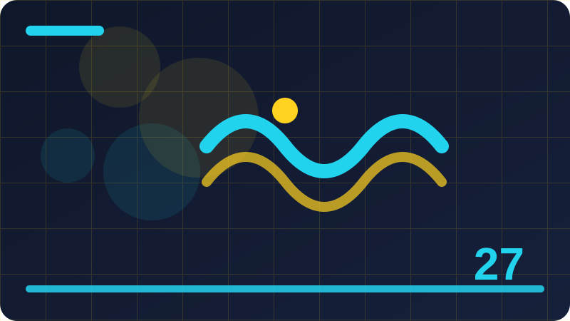

Chapter 27: Children, Family and Online Safety

Section 1: Why Children Need Online Safety
Children use the internet for learning, play, and friendship, and they need guidance that matches their age, because online risks are often hidden behind friendly designs and familiar faces. You do not need to be an expert to use this idea well. You need a simple habit, a short pause, and a trusted way to check before you act.
One key idea here is how age and experience affect a child's ability to judge online risks. Put this point into practice with a small, concrete step you can do today rather than a big promise for later. Small steps are easier to repeat, easier to remember under stress, and easier to teach to family or colleagues. Write the step down if it helps, and keep it somewhere you will actually see it.
One key idea here is why guidance works better than fear when teaching children. Watch for the common mistake connected to this point, which is usually acting first and checking later. Reversing that order changes the outcome: check first, using a channel you trust, and only then decide. Checking first costs a few minutes; recovering later can cost weeks.
One key idea here is how online play and learning bring both benefits and risks. If you are unsure how this point applies to your situation, compare it with a safe example you already know. Ask yourself what is different, what is missing, and who could confirm it for you. A trusted person, an official website you reach yourself, or an official phone number you find independently can all help.
One key idea here is why adults should stay involved without removing all independence at once. Teach this point to someone else in one short sentence when you have the chance. Teaching forces you to be clear, and it helps the other person too. If they ask a question you cannot answer, that question shows you exactly what to learn or check next.
Consider a busy day when you are tired and rushing between tasks. That is exactly when a simple habit matters most, because you will not have time to think deeply. A habit you have practised, such as pausing, checking independently, and keeping a record, will carry you through even when your attention is divided.
The main test of this section is simple: can you explain the safe choice to someone else, and can you do it calmly when you feel rushed? If the answer is yes, you have understood the heart of it. When in doubt, choose the safer and slower option, and keep a brief record of what you saw, when you saw it, and what you did next. A short record like that helps you explain the situation clearly later, and it helps anyone supporting you to give better advice. If something still feels unclear after you have checked, ask a trusted person before you take any step that cannot easily be undone.
Check: In your own words, what is the safest first step when you face why children need online safety, and how would you check it before acting?
Section 2: Talking to Children About the Internet
Honest, calm conversations help children understand online life, ask questions, and tell an adult early when something feels wrong or confusing. The goal of this section is practical confidence: you will know what to look for, what to do first, and what to avoid doing when you feel unsure.
One key idea here is how to start a conversation with curiosity rather than a lecture. Watch for the common mistake connected to this point, which is usually acting first and checking later. Reversing that order changes the outcome: check first, using a channel you trust, and only then decide. Checking first costs a few minutes; recovering later can cost weeks.
One key idea here is why children should know they will not be punished for reporting a problem. If you are unsure how this point applies to your situation, compare it with a safe example you already know. Ask yourself what is different, what is missing, and who could confirm it for you. A trusted person, an official website you reach yourself, or an official phone number you find independently can all help.
One key idea here is how regular short talks work better than one long warning. Teach this point to someone else in one short sentence when you have the chance. Teaching forces you to be clear, and it helps the other person too. If they ask a question you cannot answer, that question shows you exactly what to learn or check next.
One key idea here is why listening to a child's online interests builds trust. Keep a short note about how you handled this point the first time you used it. Notes turn a one-time lesson into a repeatable habit, and they give you something useful to look back on if a similar situation appears again.
Picture explaining this idea to a friend who is worried and wants a quick answer. You would not rush them, and you would not guess. You would help them slow down, look at the evidence, and choose the safest next step together. Treat yourself with that same patience when you are the one facing the decision.
Keep this section in mind as a checklist, not as a rule to memorise word for word. Checklists work because they are short, practical, and usable even on a difficult day. When in doubt, choose the safer and slower option, and keep a brief record of what you saw, when you saw it, and what you did next. A short record like that helps you explain the situation clearly later, and it helps anyone supporting you to give better advice. If something still feels unclear after you have checked, ask a trusted person before you take any step that cannot easily be undone. Remember that a genuine organisation will understand a careful pause, while pressure to act at once is itself a reason to be cautious.
Check: In your own words, what is the safest first step when you face talking to children about the internet, and how would you check it before acting?
Section 3: Age-Appropriate Rules That Actually Work
Age-appropriate rules set clear limits on time, content, contacts, and spending, and they work best when children understand the reason behind each rule. Think of this as one building block. On its own it is simple, but together with the other habits in this book it forms a strong everyday defence.
One key idea here is how rules should grow and change as a child grows older. If you are unsure how this point applies to your situation, compare it with a safe example you already know. Ask yourself what is different, what is missing, and who could confirm it for you. A trusted person, an official website you reach yourself, or an official phone number you find independently can all help.
One key idea here is why explaining reasons helps children follow rules when adults are absent. Teach this point to someone else in one short sentence when you have the chance. Teaching forces you to be clear, and it helps the other person too. If they ask a question you cannot answer, that question shows you exactly what to learn or check next.
One key idea here is how consistent rules across caregivers avoid confusion. Keep a short note about how you handled this point the first time you used it. Notes turn a one-time lesson into a repeatable habit, and they give you something useful to look back on if a similar situation appears again.
One key idea here is why rules should cover contacts and spending, not only screen time. Start by naming the point clearly in your own words, then ask what a safe version of it would look like in real life. A safe version is usually slower, simpler, and easier to explain to someone you trust. If you cannot explain it simply, that is a sign to pause and check again before you continue.
Think about a time you almost acted on incomplete information. Most people have had that experience, and it does not mean they were careless. It means the situation was designed, or simply happened, to be confusing. A clear habit gives you a way back to calm thinking in that moment.
You do not have to be perfect at this. You have to be consistent enough that the safe choice becomes your normal choice, and that consistency is built one small decision at a time. When in doubt, choose the safer and slower option, and keep a brief record of what you saw, when you saw it, and what you did next. A short record like that helps you explain the situation clearly later, and it helps anyone supporting you to give better advice. If something still feels unclear after you have checked, ask a trusted person before you take any step that cannot easily be undone. Remember that a genuine organisation will understand a careful pause, while pressure to act at once is itself a reason to be cautious.
Check: In your own words, what is the safest first step when you face age-appropriate rules that actually work, and how would you check it before acting?
Section 4: Safe Devices for Children
A safe device for a child has updated software, a suitable account, limited permissions, and controls that match the child's age and needs. Many people learn this lesson only after something goes wrong. Reading it now gives you the chance to practise it while nothing is at stake.
One key idea here is how a separate child account keeps settings and purchases separate. Teach this point to someone else in one short sentence when you have the chance. Teaching forces you to be clear, and it helps the other person too. If they ask a question you cannot answer, that question shows you exactly what to learn or check next.
One key idea here is why automatic updates protect a child's device quietly. Keep a short note about how you handled this point the first time you used it. Notes turn a one-time lesson into a repeatable habit, and they give you something useful to look back on if a similar situation appears again.
One key idea here is how app installation approval prevents risky downloads. Start by naming the point clearly in your own words, then ask what a safe version of it would look like in real life. A safe version is usually slower, simpler, and easier to explain to someone you trust. If you cannot explain it simply, that is a sign to pause and check again before you continue.
One key idea here is why a shared family device needs clear boundaries too. Put this point into practice with a small, concrete step you can do today rather than a big promise for later. Small steps are easier to repeat, easier to remember under stress, and easier to teach to family or colleagues. Write the step down if it helps, and keep it somewhere you will actually see it.
Imagine you receive a message that feels urgent and slightly confusing. Your first feeling may be worry, and worry makes it tempting to reply at once. Instead, take a breath, leave the message unanswered, and check the facts through a route you trust. That short pause is often the whole difference between a safe outcome and a costly one.
Before you move on, pick one action from this section and decide when you will do it. A habit that has a time attached to it is far more likely to happen than a good intention with no plan behind it. When in doubt, choose the safer and slower option, and keep a brief record of what you saw, when you saw it, and what you did next. A short record like that helps you explain the situation clearly later, and it helps anyone supporting you to give better advice. If something still feels unclear after you have checked, ask a trusted person before you take any step that cannot easily be undone. Remember that a genuine organisation will understand a careful pause, while pressure to act at once is itself a reason to be cautious.
Check: In your own words, what is the safest first step when you face safe devices for children, and how would you check it before acting?
Section 5: Parental Controls in Plain Words
Parental controls are tools that filter content, limit time, approve apps, and report activity, and they support, but do not replace, conversation and supervision. A good rule here is to slow down whenever pressure appears. Pressure is often a tool used to push people past their normal good judgement.
One key idea here is how content filters reduce accidental exposure to unsuitable material. Keep a short note about how you handled this point the first time you used it. Notes turn a one-time lesson into a repeatable habit, and they give you something useful to look back on if a similar situation appears again.
One key idea here is why time limits should be agreed rather than imposed without explanation. Start by naming the point clearly in your own words, then ask what a safe version of it would look like in real life. A safe version is usually slower, simpler, and easier to explain to someone you trust. If you cannot explain it simply, that is a sign to pause and check again before you continue.
One key idea here is how activity reports can start conversations rather than punishments. Put this point into practice with a small, concrete step you can do today rather than a big promise for later. Small steps are easier to repeat, easier to remember under stress, and easier to teach to family or colleagues. Write the step down if it helps, and keep it somewhere you will actually see it.
One key idea here is why no control tool can block every risk on its own. Watch for the common mistake connected to this point, which is usually acting first and checking later. Reversing that order changes the outcome: check first, using a channel you trust, and only then decide. Checking first costs a few minutes; recovering later can cost weeks.
Consider a busy day when you are tired and rushing between tasks. That is exactly when a simple habit matters most, because you will not have time to think deeply. A habit you have practised, such as pausing, checking independently, and keeping a record, will carry you through even when your attention is divided.
The main test of this section is simple: can you explain the safe choice to someone else, and can you do it calmly when you feel rushed? If the answer is yes, you have understood the heart of it. When in doubt, choose the safer and slower option, and keep a brief record of what you saw, when you saw it, and what you did next. A short record like that helps you explain the situation clearly later, and it helps anyone supporting you to give better advice. If something still feels unclear after you have checked, ask a trusted person before you take any step that cannot easily be undone. Remember that a genuine organisation will understand a careful pause, while pressure to act at once is itself a reason to be cautious.
def family_privacy_checklist():
"""Print a family privacy walkthrough checklist to review together."""
for item in ["Who can contact this account?", "Who can see posts and photos?", "Is location sharing off?", "Are purchases approval-only?"]:
print("[ ]", item)
family_privacy_checklist()Check: In your own words, what is the safest first step when you face parental controls in plain words, and how would you check it before acting?
Section 6: Privacy for Children Online
Children's privacy means protecting names, photos, school details, locations, and routines from strangers, advertisers, and anyone who might misuse them. This matters because small decisions made in a hurry can have large consequences, and a calm, clear habit protects you better than fear or speed ever will.
One key idea here is how a photo can reveal a school, home, or routine through its background. Start by naming the point clearly in your own words, then ask what a safe version of it would look like in real life. A safe version is usually slower, simpler, and easier to explain to someone you trust. If you cannot explain it simply, that is a sign to pause and check again before you continue.
One key idea here is why children should not share full names, addresses, or school names publicly. Put this point into practice with a small, concrete step you can do today rather than a big promise for later. Small steps are easier to repeat, easier to remember under stress, and easier to teach to family or colleagues. Write the step down if it helps, and keep it somewhere you will actually see it.
One key idea here is how privacy settings on apps and games limit who can see a child. Watch for the common mistake connected to this point, which is usually acting first and checking later. Reversing that order changes the outcome: check first, using a channel you trust, and only then decide. Checking first costs a few minutes; recovering later can cost weeks.
One key idea here is why adults should ask before posting photos of children online. If you are unsure how this point applies to your situation, compare it with a safe example you already know. Ask yourself what is different, what is missing, and who could confirm it for you. A trusted person, an official website you reach yourself, or an official phone number you find independently can all help.
Picture explaining this idea to a friend who is worried and wants a quick answer. You would not rush them, and you would not guess. You would help them slow down, look at the evidence, and choose the safest next step together. Treat yourself with that same patience when you are the one facing the decision.
Keep this section in mind as a checklist, not as a rule to memorise word for word. Checklists work because they are short, practical, and usable even on a difficult day. When in doubt, choose the safer and slower option, and keep a brief record of what you saw, when you saw it, and what you did next. A short record like that helps you explain the situation clearly later, and it helps anyone supporting you to give better advice. If something still feels unclear after you have checked, ask a trusted person before you take any step that cannot easily be undone.
Check: In your own words, what is the safest first step when you face privacy for children online, and how would you check it before acting?
Section 7: Photos, Sharing and Consent
Sharing photos of children raises questions of consent, safety, and future control, because once a photo is online it is very hard to remove completely. You do not need to be an expert to use this idea well. You need a simple habit, a short pause, and a trusted way to check before you act.
One key idea here is how to ask a child before sharing their photo, in a way they can refuse. Put this point into practice with a small, concrete step you can do today rather than a big promise for later. Small steps are easier to repeat, easier to remember under stress, and easier to teach to family or colleagues. Write the step down if it helps, and keep it somewhere you will actually see it.
One key idea here is why group photos can expose other children too. Watch for the common mistake connected to this point, which is usually acting first and checking later. Reversing that order changes the outcome: check first, using a channel you trust, and only then decide. Checking first costs a few minutes; recovering later can cost weeks.
One key idea here is how to check what a photo reveals before posting it. If you are unsure how this point applies to your situation, compare it with a safe example you already know. Ask yourself what is different, what is missing, and who could confirm it for you. A trusted person, an official website you reach yourself, or an official phone number you find independently can all help.
One key idea here is why private sharing with family differs from public posting. Teach this point to someone else in one short sentence when you have the chance. Teaching forces you to be clear, and it helps the other person too. If they ask a question you cannot answer, that question shows you exactly what to learn or check next.
Think about a time you almost acted on incomplete information. Most people have had that experience, and it does not mean they were careless. It means the situation was designed, or simply happened, to be confusing. A clear habit gives you a way back to calm thinking in that moment.
You do not have to be perfect at this. You have to be consistent enough that the safe choice becomes your normal choice, and that consistency is built one small decision at a time. When in doubt, choose the safer and slower option, and keep a brief record of what you saw, when you saw it, and what you did next. A short record like that helps you explain the situation clearly later, and it helps anyone supporting you to give better advice. If something still feels unclear after you have checked, ask a trusted person before you take any step that cannot easily be undone. Remember that a genuine organisation will understand a careful pause, while pressure to act at once is itself a reason to be cautious.
Check: In your own words, what is the safest first step when you face photos, sharing and consent, and how would you check it before acting?
Section 8: Online Friends and Strangers
Online friends can feel real and close, yet a child cannot always know who is behind a profile, and strangers may pretend to be children to gain trust. The goal of this section is practical confidence: you will know what to look for, what to do first, and what to avoid doing when you feel unsure.
One key idea here is how to explain that an online friend is not the same as a verified real friend. Watch for the common mistake connected to this point, which is usually acting first and checking later. Reversing that order changes the outcome: check first, using a channel you trust, and only then decide. Checking first costs a few minutes; recovering later can cost weeks.
One key idea here is why personal details should never be shared with online-only contacts. If you are unsure how this point applies to your situation, compare it with a safe example you already know. Ask yourself what is different, what is missing, and who could confirm it for you. A trusted person, an official website you reach yourself, or an official phone number you find independently can all help.
One key idea here is how to recognise when an online friendship becomes secretive or pressuring. Teach this point to someone else in one short sentence when you have the chance. Teaching forces you to be clear, and it helps the other person too. If they ask a question you cannot answer, that question shows you exactly what to learn or check next.
One key idea here is why meeting an online contact in person always needs adult involvement. Keep a short note about how you handled this point the first time you used it. Notes turn a one-time lesson into a repeatable habit, and they give you something useful to look back on if a similar situation appears again.
Imagine you receive a message that feels urgent and slightly confusing. Your first feeling may be worry, and worry makes it tempting to reply at once. Instead, take a breath, leave the message unanswered, and check the facts through a route you trust. That short pause is often the whole difference between a safe outcome and a costly one.
Before you move on, pick one action from this section and decide when you will do it. A habit that has a time attached to it is far more likely to happen than a good intention with no plan behind it. When in doubt, choose the safer and slower option, and keep a brief record of what you saw, when you saw it, and what you did next. A short record like that helps you explain the situation clearly later, and it helps anyone supporting you to give better advice. If something still feels unclear after you have checked, ask a trusted person before you take any step that cannot easily be undone. Remember that a genuine organisation will understand a careful pause, while pressure to act at once is itself a reason to be cautious.
Check: In your own words, what is the safest first step when you face online friends and strangers, and how would you check it before acting?
Section 9: Grooming: Warning Signs for Families
Grooming is a slow process in which an adult builds trust with a child, often through gifts, attention, and secrecy, before attempting harm, and early warning signs deserve serious attention. Think of this as one building block. On its own it is simple, but together with the other habits in this book it forms a strong everyday defence.
One key idea here is how excessive attention and special treatment can be a warning sign. If you are unsure how this point applies to your situation, compare it with a safe example you already know. Ask yourself what is different, what is missing, and who could confirm it for you. A trusted person, an official website you reach yourself, or an official phone number you find independently can all help.
One key idea here is why secrecy and requests to keep conversations private are serious red flags. Teach this point to someone else in one short sentence when you have the chance. Teaching forces you to be clear, and it helps the other person too. If they ask a question you cannot answer, that question shows you exactly what to learn or check next.
One key idea here is how gifts and favours are used to create obligation. Keep a short note about how you handled this point the first time you used it. Notes turn a one-time lesson into a repeatable habit, and they give you something useful to look back on if a similar situation appears again.
One key idea here is why any adult who tries to isolate a child from family needs reporting. Start by naming the point clearly in your own words, then ask what a safe version of it would look like in real life. A safe version is usually slower, simpler, and easier to explain to someone you trust. If you cannot explain it simply, that is a sign to pause and check again before you continue.
Consider a busy day when you are tired and rushing between tasks. That is exactly when a simple habit matters most, because you will not have time to think deeply. A habit you have practised, such as pausing, checking independently, and keeping a record, will carry you through even when your attention is divided.
The main test of this section is simple: can you explain the safe choice to someone else, and can you do it calmly when you feel rushed? If the answer is yes, you have understood the heart of it. When in doubt, choose the safer and slower option, and keep a brief record of what you saw, when you saw it, and what you did next. A short record like that helps you explain the situation clearly later, and it helps anyone supporting you to give better advice. If something still feels unclear after you have checked, ask a trusted person before you take any step that cannot easily be undone.
Check: In your own words, what is the safest first step when you face grooming: warning signs for families, and how would you check it before acting?
Section 10: Cyberbullying: What It Looks Like
Cyberbullying uses messages, posts, images, or exclusion to hurt, embarrass, or frighten a child, and it can follow a child home through their device. Many people learn this lesson only after something goes wrong. Reading it now gives you the chance to practise it while nothing is at stake.
One key idea here is how hurtful messages, rumours, and exclusion count as bullying. Teach this point to someone else in one short sentence when you have the chance. Teaching forces you to be clear, and it helps the other person too. If they ask a question you cannot answer, that question shows you exactly what to learn or check next.
One key idea here is why screenshots and saved messages matter as evidence. Keep a short note about how you handled this point the first time you used it. Notes turn a one-time lesson into a repeatable habit, and they give you something useful to look back on if a similar situation appears again.
One key idea here is how bystanders can help by supporting the target and reporting. Start by naming the point clearly in your own words, then ask what a safe version of it would look like in real life. A safe version is usually slower, simpler, and easier to explain to someone you trust. If you cannot explain it simply, that is a sign to pause and check again before you continue.
One key idea here is why telling a trusted adult early prevents harm from growing. Put this point into practice with a small, concrete step you can do today rather than a big promise for later. Small steps are easier to repeat, easier to remember under stress, and easier to teach to family or colleagues. Write the step down if it helps, and keep it somewhere you will actually see it.
Picture explaining this idea to a friend who is worried and wants a quick answer. You would not rush them, and you would not guess. You would help them slow down, look at the evidence, and choose the safest next step together. Treat yourself with that same patience when you are the one facing the decision.
Keep this section in mind as a checklist, not as a rule to memorise word for word. Checklists work because they are short, practical, and usable even on a difficult day. When in doubt, choose the safer and slower option, and keep a brief record of what you saw, when you saw it, and what you did next. A short record like that helps you explain the situation clearly later, and it helps anyone supporting you to give better advice. If something still feels unclear after you have checked, ask a trusted person before you take any step that cannot easily be undone. Remember that a genuine organisation will understand a careful pause, while pressure to act at once is itself a reason to be cautious.
Check: In your own words, what is the safest first step when you face cyberbullying: what it looks like, and how would you check it before acting?
Section 11: Helping a Child Who Is Bullied Online
Helping a bullied child means listening calmly, believing them, saving evidence, blocking and reporting where useful, and involving school or platform support. A good rule here is to slow down whenever pressure appears. Pressure is often a tool used to push people past their normal good judgement.
One key idea here is how to respond without blame when a child reports bullying. Keep a short note about how you handled this point the first time you used it. Notes turn a one-time lesson into a repeatable habit, and they give you something useful to look back on if a similar situation appears again.
One key idea here is why blocking should be balanced with saving evidence first. Start by naming the point clearly in your own words, then ask what a safe version of it would look like in real life. A safe version is usually slower, simpler, and easier to explain to someone you trust. If you cannot explain it simply, that is a sign to pause and check again before you continue.
One key idea here is how school policies can help when bullying involves classmates. Put this point into practice with a small, concrete step you can do today rather than a big promise for later. Small steps are easier to repeat, easier to remember under stress, and easier to teach to family or colleagues. Write the step down if it helps, and keep it somewhere you will actually see it.
One key idea here is why ongoing support matters after the messages stop. Watch for the common mistake connected to this point, which is usually acting first and checking later. Reversing that order changes the outcome: check first, using a channel you trust, and only then decide. Checking first costs a few minutes; recovering later can cost weeks.
Think about a time you almost acted on incomplete information. Most people have had that experience, and it does not mean they were careless. It means the situation was designed, or simply happened, to be confusing. A clear habit gives you a way back to calm thinking in that moment.
You do not have to be perfect at this. You have to be consistent enough that the safe choice becomes your normal choice, and that consistency is built one small decision at a time. When in doubt, choose the safer and slower option, and keep a brief record of what you saw, when you saw it, and what you did next. A short record like that helps you explain the situation clearly later, and it helps anyone supporting you to give better advice. If something still feels unclear after you have checked, ask a trusted person before you take any step that cannot easily be undone. Remember that a genuine organisation will understand a careful pause, while pressure to act at once is itself a reason to be cautious.
Check: In your own words, what is the safest first step when you face helping a child who is bullied online, and how would you check it before acting?
Section 12: Gaming Safety for Children
Gaming safety covers who children play with, what they hear and see, what they spend, and how much time games take from sleep and school. This matters because small decisions made in a hurry can have large consequences, and a calm, clear habit protects you better than fear or speed ever will.
One key idea here is how voice chat with strangers can expose children to unsuitable language. Start by naming the point clearly in your own words, then ask what a safe version of it would look like in real life. A safe version is usually slower, simpler, and easier to explain to someone you trust. If you cannot explain it simply, that is a sign to pause and check again before you continue.
One key idea here is why in-game purchases need clear family rules and approval. Put this point into practice with a small, concrete step you can do today rather than a big promise for later. Small steps are easier to repeat, easier to remember under stress, and easier to teach to family or colleagues. Write the step down if it helps, and keep it somewhere you will actually see it.
One key idea here is how game ratings help families choose suitable games. Watch for the common mistake connected to this point, which is usually acting first and checking later. Reversing that order changes the outcome: check first, using a channel you trust, and only then decide. Checking first costs a few minutes; recovering later can cost weeks.
One key idea here is why playing together helps adults understand a game's risks. If you are unsure how this point applies to your situation, compare it with a safe example you already know. Ask yourself what is different, what is missing, and who could confirm it for you. A trusted person, an official website you reach yourself, or an official phone number you find independently can all help.
Imagine you receive a message that feels urgent and slightly confusing. Your first feeling may be worry, and worry makes it tempting to reply at once. Instead, take a breath, leave the message unanswered, and check the facts through a route you trust. That short pause is often the whole difference between a safe outcome and a costly one.
Before you move on, pick one action from this section and decide when you will do it. A habit that has a time attached to it is far more likely to happen than a good intention with no plan behind it. When in doubt, choose the safer and slower option, and keep a brief record of what you saw, when you saw it, and what you did next. A short record like that helps you explain the situation clearly later, and it helps anyone supporting you to give better advice. If something still feels unclear after you have checked, ask a trusted person before you take any step that cannot easily be undone.
Check: In your own words, what is the safest first step when you face gaming safety for children, and how would you check it before acting?
Section 13: Social Media and Young Users
Social media can connect young users with friends and interests, but it also brings pressure, comparison, public exposure, and contact from strangers. You do not need to be an expert to use this idea well. You need a simple habit, a short pause, and a trusted way to check before you act.
One key idea here is how age limits on platforms exist for safety reasons. Put this point into practice with a small, concrete step you can do today rather than a big promise for later. Small steps are easier to repeat, easier to remember under stress, and easier to teach to family or colleagues. Write the step down if it helps, and keep it somewhere you will actually see it.
One key idea here is why public profiles increase contact from strangers. Watch for the common mistake connected to this point, which is usually acting first and checking later. Reversing that order changes the outcome: check first, using a channel you trust, and only then decide. Checking first costs a few minutes; recovering later can cost weeks.
One key idea here is how likes and comments can affect confidence and mood. If you are unsure how this point applies to your situation, compare it with a safe example you already know. Ask yourself what is different, what is missing, and who could confirm it for you. A trusted person, an official website you reach yourself, or an official phone number you find independently can all help.
One key idea here is why families should agree on what is shared and with whom. Teach this point to someone else in one short sentence when you have the chance. Teaching forces you to be clear, and it helps the other person too. If they ask a question you cannot answer, that question shows you exactly what to learn or check next.
Consider a busy day when you are tired and rushing between tasks. That is exactly when a simple habit matters most, because you will not have time to think deeply. A habit you have practised, such as pausing, checking independently, and keeping a record, will carry you through even when your attention is divided.
The main test of this section is simple: can you explain the safe choice to someone else, and can you do it calmly when you feel rushed? If the answer is yes, you have understood the heart of it. When in doubt, choose the safer and slower option, and keep a brief record of what you saw, when you saw it, and what you did next. A short record like that helps you explain the situation clearly later, and it helps anyone supporting you to give better advice. If something still feels unclear after you have checked, ask a trusted person before you take any step that cannot easily be undone. Remember that a genuine organisation will understand a careful pause, while pressure to act at once is itself a reason to be cautious.
Check: In your own words, what is the safest first step when you face social media and young users, and how would you check it before acting?
Section 14: Videos, Streams and Influencers
Videos and streams shape what children believe and want, and influencers may promote products, challenges, or ideas without clear advertising labels. The goal of this section is practical confidence: you will know what to look for, what to do first, and what to avoid doing when you feel unsure.
One key idea here is how to talk about advertising hidden inside entertaining videos. Watch for the common mistake connected to this point, which is usually acting first and checking later. Reversing that order changes the outcome: check first, using a channel you trust, and only then decide. Checking first costs a few minutes; recovering later can cost weeks.
One key idea here is why dangerous challenges should be checked before copying them. If you are unsure how this point applies to your situation, compare it with a safe example you already know. Ask yourself what is different, what is missing, and who could confirm it for you. A trusted person, an official website you reach yourself, or an official phone number you find independently can all help.
One key idea here is how autoplay and recommendations can lead to unsuitable content. Teach this point to someone else in one short sentence when you have the chance. Teaching forces you to be clear, and it helps the other person too. If they ask a question you cannot answer, that question shows you exactly what to learn or check next.
One key idea here is why watching together helps adults spot problems early. Keep a short note about how you handled this point the first time you used it. Notes turn a one-time lesson into a repeatable habit, and they give you something useful to look back on if a similar situation appears again.
Picture explaining this idea to a friend who is worried and wants a quick answer. You would not rush them, and you would not guess. You would help them slow down, look at the evidence, and choose the safest next step together. Treat yourself with that same patience when you are the one facing the decision.
Keep this section in mind as a checklist, not as a rule to memorise word for word. Checklists work because they are short, practical, and usable even on a difficult day. When in doubt, choose the safer and slower option, and keep a brief record of what you saw, when you saw it, and what you did next. A short record like that helps you explain the situation clearly later, and it helps anyone supporting you to give better advice. If something still feels unclear after you have checked, ask a trusted person before you take any step that cannot easily be undone. Remember that a genuine organisation will understand a careful pause, while pressure to act at once is itself a reason to be cautious.
Check: In your own words, what is the safest first step when you face videos, streams and influencers, and how would you check it before acting?
Section 15: Screen Time, Sleep and Wellbeing
Screen time affects sleep, mood, schoolwork, and family life, and healthy routines protect wellbeing better than sudden bans or constant arguments. Think of this as one building block. On its own it is simple, but together with the other habits in this book it forms a strong everyday defence.
One key idea here is how screens before bed can make falling asleep harder. If you are unsure how this point applies to your situation, compare it with a safe example you already know. Ask yourself what is different, what is missing, and who could confirm it for you. A trusted person, an official website you reach yourself, or an official phone number you find independently can all help.
One key idea here is why device-free meals and bedrooms help family routines. Teach this point to someone else in one short sentence when you have the chance. Teaching forces you to be clear, and it helps the other person too. If they ask a question you cannot answer, that question shows you exactly what to learn or check next.
One key idea here is how agreed schedules reduce daily arguments about devices. Keep a short note about how you handled this point the first time you used it. Notes turn a one-time lesson into a repeatable habit, and they give you something useful to look back on if a similar situation appears again.
One key idea here is why physical play and rest are part of online safety too. Start by naming the point clearly in your own words, then ask what a safe version of it would look like in real life. A safe version is usually slower, simpler, and easier to explain to someone you trust. If you cannot explain it simply, that is a sign to pause and check again before you continue.
Think about a time you almost acted on incomplete information. Most people have had that experience, and it does not mean they were careless. It means the situation was designed, or simply happened, to be confusing. A clear habit gives you a way back to calm thinking in that moment.
You do not have to be perfect at this. You have to be consistent enough that the safe choice becomes your normal choice, and that consistency is built one small decision at a time. When in doubt, choose the safer and slower option, and keep a brief record of what you saw, when you saw it, and what you did next. A short record like that helps you explain the situation clearly later, and it helps anyone supporting you to give better advice. If something still feels unclear after you have checked, ask a trusted person before you take any step that cannot easily be undone. Remember that a genuine organisation will understand a careful pause, while pressure to act at once is itself a reason to be cautious.
Check: In your own words, what is the safest first step when you face screen time, sleep and wellbeing, and how would you check it before acting?
Section 16: Passwords and Accounts for Children
Children need simple, safe account habits: their own passwords where appropriate, no sharing with friends, and adult help for recovery and important changes. Many people learn this lesson only after something goes wrong. Reading it now gives you the chance to practise it while nothing is at stake.
One key idea here is how to create a memorable password a child can keep private. Teach this point to someone else in one short sentence when you have the chance. Teaching forces you to be clear, and it helps the other person too. If they ask a question you cannot answer, that question shows you exactly what to learn or check next.
One key idea here is why sharing passwords with friends creates risks even among trusted peers. Keep a short note about how you handled this point the first time you used it. Notes turn a one-time lesson into a repeatable habit, and they give you something useful to look back on if a similar situation appears again.
One key idea here is how adult-managed recovery helps when a child forgets a password. Start by naming the point clearly in your own words, then ask what a safe version of it would look like in real life. A safe version is usually slower, simpler, and easier to explain to someone you trust. If you cannot explain it simply, that is a sign to pause and check again before you continue.
One key idea here is why two-factor protection should be set up with adult help. Put this point into practice with a small, concrete step you can do today rather than a big promise for later. Small steps are easier to repeat, easier to remember under stress, and easier to teach to family or colleagues. Write the step down if it helps, and keep it somewhere you will actually see it.
Imagine you receive a message that feels urgent and slightly confusing. Your first feeling may be worry, and worry makes it tempting to reply at once. Instead, take a breath, leave the message unanswered, and check the facts through a route you trust. That short pause is often the whole difference between a safe outcome and a costly one.
Before you move on, pick one action from this section and decide when you will do it. A habit that has a time attached to it is far more likely to happen than a good intention with no plan behind it. When in doubt, choose the safer and slower option, and keep a brief record of what you saw, when you saw it, and what you did next. A short record like that helps you explain the situation clearly later, and it helps anyone supporting you to give better advice. If something still feels unclear after you have checked, ask a trusted person before you take any step that cannot easily be undone. Remember that a genuine organisation will understand a careful pause, while pressure to act at once is itself a reason to be cautious.
Check: In your own words, what is the safest first step when you face passwords and accounts for children, and how would you check it before acting?
Section 17: Safe Searching and Homework Help
Safe searching helps children find reliable homework information, avoid copied work, and recognise when a result is an advert, a fake, or unsuitable. A good rule here is to slow down whenever pressure appears. Pressure is often a tool used to push people past their normal good judgement.
One key idea here is how to use safe search settings on a child's device. Keep a short note about how you handled this point the first time you used it. Notes turn a one-time lesson into a repeatable habit, and they give you something useful to look back on if a similar situation appears again.
One key idea here is why checking more than one source improves homework answers. Start by naming the point clearly in your own words, then ask what a safe version of it would look like in real life. A safe version is usually slower, simpler, and easier to explain to someone you trust. If you cannot explain it simply, that is a sign to pause and check again before you continue.
One key idea here is how to spot adverts disguised as search results. Put this point into practice with a small, concrete step you can do today rather than a big promise for later. Small steps are easier to repeat, easier to remember under stress, and easier to teach to family or colleagues. Write the step down if it helps, and keep it somewhere you will actually see it.
One key idea here is why asking for help is better than copying an unknown answer. Watch for the common mistake connected to this point, which is usually acting first and checking later. Reversing that order changes the outcome: check first, using a channel you trust, and only then decide. Checking first costs a few minutes; recovering later can cost weeks.
Consider a busy day when you are tired and rushing between tasks. That is exactly when a simple habit matters most, because you will not have time to think deeply. A habit you have practised, such as pausing, checking independently, and keeping a record, will carry you through even when your attention is divided.
The main test of this section is simple: can you explain the safe choice to someone else, and can you do it calmly when you feel rushed? If the answer is yes, you have understood the heart of it. When in doubt, choose the safer and slower option, and keep a brief record of what you saw, when you saw it, and what you did next. A short record like that helps you explain the situation clearly later, and it helps anyone supporting you to give better advice. If something still feels unclear after you have checked, ask a trusted person before you take any step that cannot easily be undone. Remember that a genuine organisation will understand a careful pause, while pressure to act at once is itself a reason to be cautious.
Check: In your own words, what is the safest first step when you face safe searching and homework help, and how would you check it before acting?
Section 18: Fake News and Children
Children meet false claims, edited videos, and rumours online, and simple checking habits help them pause before believing or sharing them. This matters because small decisions made in a hurry can have large consequences, and a calm, clear habit protects you better than fear or speed ever will.
One key idea here is how to ask who made a claim and what evidence supports it. Start by naming the point clearly in your own words, then ask what a safe version of it would look like in real life. A safe version is usually slower, simpler, and easier to explain to someone you trust. If you cannot explain it simply, that is a sign to pause and check again before you continue.
One key idea here is why shocking headlines are designed to be shared quickly. Put this point into practice with a small, concrete step you can do today rather than a big promise for later. Small steps are easier to repeat, easier to remember under stress, and easier to teach to family or colleagues. Write the step down if it helps, and keep it somewhere you will actually see it.
One key idea here is how edited images and videos can mislead viewers. Watch for the common mistake connected to this point, which is usually acting first and checking later. Reversing that order changes the outcome: check first, using a channel you trust, and only then decide. Checking first costs a few minutes; recovering later can cost weeks.
One key idea here is why checking with a trusted adult or source helps. If you are unsure how this point applies to your situation, compare it with a safe example you already know. Ask yourself what is different, what is missing, and who could confirm it for you. A trusted person, an official website you reach yourself, or an official phone number you find independently can all help.
Picture explaining this idea to a friend who is worried and wants a quick answer. You would not rush them, and you would not guess. You would help them slow down, look at the evidence, and choose the safest next step together. Treat yourself with that same patience when you are the one facing the decision.
Keep this section in mind as a checklist, not as a rule to memorise word for word. Checklists work because they are short, practical, and usable even on a difficult day. When in doubt, choose the safer and slower option, and keep a brief record of what you saw, when you saw it, and what you did next. A short record like that helps you explain the situation clearly later, and it helps anyone supporting you to give better advice. If something still feels unclear after you have checked, ask a trusted person before you take any step that cannot easily be undone. Remember that a genuine organisation will understand a careful pause, while pressure to act at once is itself a reason to be cautious.
Check: In your own words, what is the safest first step when you face fake news and children, and how would you check it before acting?
Section 19: In-App Purchases and Spending Traps
Games and apps use coins, bundles, and timed offers that can make spending feel like play, and children may not realise real money is involved. You do not need to be an expert to use this idea well. You need a simple habit, a short pause, and a trusted way to check before you act.
One key idea here is how to explain the difference between game coins and real money. Put this point into practice with a small, concrete step you can do today rather than a big promise for later. Small steps are easier to repeat, easier to remember under stress, and easier to teach to family or colleagues. Write the step down if it helps, and keep it somewhere you will actually see it.
One key idea here is why purchase approval and spending limits protect families. Watch for the common mistake connected to this point, which is usually acting first and checking later. Reversing that order changes the outcome: check first, using a channel you trust, and only then decide. Checking first costs a few minutes; recovering later can cost weeks.
One key idea here is how timed offers create pressure to buy quickly. If you are unsure how this point applies to your situation, compare it with a safe example you already know. Ask yourself what is different, what is missing, and who could confirm it for you. A trusted person, an official website you reach yourself, or an official phone number you find independently can all help.
One key idea here is why statements should be checked regularly for unexpected charges. Teach this point to someone else in one short sentence when you have the chance. Teaching forces you to be clear, and it helps the other person too. If they ask a question you cannot answer, that question shows you exactly what to learn or check next.
Think about a time you almost acted on incomplete information. Most people have had that experience, and it does not mean they were careless. It means the situation was designed, or simply happened, to be confusing. A clear habit gives you a way back to calm thinking in that moment.
You do not have to be perfect at this. You have to be consistent enough that the safe choice becomes your normal choice, and that consistency is built one small decision at a time. When in doubt, choose the safer and slower option, and keep a brief record of what you saw, when you saw it, and what you did next. A short record like that helps you explain the situation clearly later, and it helps anyone supporting you to give better advice. If something still feels unclear after you have checked, ask a trusted person before you take any step that cannot easily be undone. Remember that a genuine organisation will understand a careful pause, while pressure to act at once is itself a reason to be cautious.
Check: In your own words, what is the safest first step when you face in-app purchases and spending traps, and how would you check it before acting?
Section 20: Location Sharing and Children
Location sharing can reveal where a child lives, learns, and plays, and families should agree when, if ever, location is shared and with whom. The goal of this section is practical confidence: you will know what to look for, what to do first, and what to avoid doing when you feel unsure.
One key idea here is how photo and app settings can share location without a child realising. Watch for the common mistake connected to this point, which is usually acting first and checking later. Reversing that order changes the outcome: check first, using a channel you trust, and only then decide. Checking first costs a few minutes; recovering later can cost weeks.
One key idea here is why location should only be shared with trusted family when needed. If you are unsure how this point applies to your situation, compare it with a safe example you already know. Ask yourself what is different, what is missing, and who could confirm it for you. A trusted person, an official website you reach yourself, or an official phone number you find independently can all help.
One key idea here is how to check location permissions on a child's apps. Teach this point to someone else in one short sentence when you have the chance. Teaching forces you to be clear, and it helps the other person too. If they ask a question you cannot answer, that question shows you exactly what to learn or check next.
One key idea here is why a family rule about location keeps decisions simple. Keep a short note about how you handled this point the first time you used it. Notes turn a one-time lesson into a repeatable habit, and they give you something useful to look back on if a similar situation appears again.
Imagine you receive a message that feels urgent and slightly confusing. Your first feeling may be worry, and worry makes it tempting to reply at once. Instead, take a breath, leave the message unanswered, and check the facts through a route you trust. That short pause is often the whole difference between a safe outcome and a costly one.
Before you move on, pick one action from this section and decide when you will do it. A habit that has a time attached to it is far more likely to happen than a good intention with no plan behind it. When in doubt, choose the safer and slower option, and keep a brief record of what you saw, when you saw it, and what you did next. A short record like that helps you explain the situation clearly later, and it helps anyone supporting you to give better advice. If something still feels unclear after you have checked, ask a trusted person before you take any step that cannot easily be undone. Remember that a genuine organisation will understand a careful pause, while pressure to act at once is itself a reason to be cautious.
Check: In your own words, what is the safest first step when you face location sharing and children, and how would you check it before acting?
Section 21: Smart Toys and Home Devices
Smart toys and home devices may record voices, connect to the internet, and store data, so families should check their privacy and security settings. Think of this as one building block. On its own it is simple, but together with the other habits in this book it forms a strong everyday defence.
One key idea here is how to check what data a smart toy collects and stores. If you are unsure how this point applies to your situation, compare it with a safe example you already know. Ask yourself what is different, what is missing, and who could confirm it for you. A trusted person, an official website you reach yourself, or an official phone number you find independently can all help.
One key idea here is why default passwords on home devices should be changed. Teach this point to someone else in one short sentence when you have the chance. Teaching forces you to be clear, and it helps the other person too. If they ask a question you cannot answer, that question shows you exactly what to learn or check next.
One key idea here is how to review microphone and camera permissions on toys. Keep a short note about how you handled this point the first time you used it. Notes turn a one-time lesson into a repeatable habit, and they give you something useful to look back on if a similar situation appears again.
One key idea here is why turning off unused smart features reduces risk. Start by naming the point clearly in your own words, then ask what a safe version of it would look like in real life. A safe version is usually slower, simpler, and easier to explain to someone you trust. If you cannot explain it simply, that is a sign to pause and check again before you continue.
Consider a busy day when you are tired and rushing between tasks. That is exactly when a simple habit matters most, because you will not have time to think deeply. A habit you have practised, such as pausing, checking independently, and keeping a record, will carry you through even when your attention is divided.
The main test of this section is simple: can you explain the safe choice to someone else, and can you do it calmly when you feel rushed? If the answer is yes, you have understood the heart of it. When in doubt, choose the safer and slower option, and keep a brief record of what you saw, when you saw it, and what you did next. A short record like that helps you explain the situation clearly later, and it helps anyone supporting you to give better advice. If something still feels unclear after you have checked, ask a trusted person before you take any step that cannot easily be undone. Remember that a genuine organisation will understand a careful pause, while pressure to act at once is itself a reason to be cautious.
Check: In your own words, what is the safest first step when you face smart toys and home devices, and how would you check it before acting?
Section 22: School Devices and Accounts
School devices and accounts carry learning work and personal details, and children should treat them with the same care as personal accounts. Many people learn this lesson only after something goes wrong. Reading it now gives you the chance to practise it while nothing is at stake.
One key idea here is how to keep school passwords private even from close friends. Teach this point to someone else in one short sentence when you have the chance. Teaching forces you to be clear, and it helps the other person too. If they ask a question you cannot answer, that question shows you exactly what to learn or check next.
One key idea here is why school work should be backed up where the school advises. Keep a short note about how you handled this point the first time you used it. Notes turn a one-time lesson into a repeatable habit, and they give you something useful to look back on if a similar situation appears again.
One key idea here is how to report a problem on a school device to a teacher. Start by naming the point clearly in your own words, then ask what a safe version of it would look like in real life. A safe version is usually slower, simpler, and easier to explain to someone you trust. If you cannot explain it simply, that is a sign to pause and check again before you continue.
One key idea here is why school accounts should not be used for unrelated sign-ups. Put this point into practice with a small, concrete step you can do today rather than a big promise for later. Small steps are easier to repeat, easier to remember under stress, and easier to teach to family or colleagues. Write the step down if it helps, and keep it somewhere you will actually see it.
Picture explaining this idea to a friend who is worried and wants a quick answer. You would not rush them, and you would not guess. You would help them slow down, look at the evidence, and choose the safest next step together. Treat yourself with that same patience when you are the one facing the decision.
Keep this section in mind as a checklist, not as a rule to memorise word for word. Checklists work because they are short, practical, and usable even on a difficult day. When in doubt, choose the safer and slower option, and keep a brief record of what you saw, when you saw it, and what you did next. A short record like that helps you explain the situation clearly later, and it helps anyone supporting you to give better advice. If something still feels unclear after you have checked, ask a trusted person before you take any step that cannot easily be undone. Remember that a genuine organisation will understand a careful pause, while pressure to act at once is itself a reason to be cautious.
Check: In your own words, what is the safest first step when you face school devices and accounts, and how would you check it before acting?
Section 23: When a Child Sees Something Upsetting
Seeing upsetting content online can frighten or confuse a child, and a calm adult response helps them process it and know what to do next. A good rule here is to slow down whenever pressure appears. Pressure is often a tool used to push people past their normal good judgement.
One key idea here is how to respond calmly without overreacting to what a child saw. Keep a short note about how you handled this point the first time you used it. Notes turn a one-time lesson into a repeatable habit, and they give you something useful to look back on if a similar situation appears again.
One key idea here is why a child should be able to close a page and tell an adult. Start by naming the point clearly in your own words, then ask what a safe version of it would look like in real life. A safe version is usually slower, simpler, and easier to explain to someone you trust. If you cannot explain it simply, that is a sign to pause and check again before you continue.
One key idea here is how to report upsetting content through the platform. Put this point into practice with a small, concrete step you can do today rather than a big promise for later. Small steps are easier to repeat, easier to remember under stress, and easier to teach to family or colleagues. Write the step down if it helps, and keep it somewhere you will actually see it.
One key idea here is why follow-up conversations help after an upsetting experience. Watch for the common mistake connected to this point, which is usually acting first and checking later. Reversing that order changes the outcome: check first, using a channel you trust, and only then decide. Checking first costs a few minutes; recovering later can cost weeks.
Think about a time you almost acted on incomplete information. Most people have had that experience, and it does not mean they were careless. It means the situation was designed, or simply happened, to be confusing. A clear habit gives you a way back to calm thinking in that moment.
You do not have to be perfect at this. You have to be consistent enough that the safe choice becomes your normal choice, and that consistency is built one small decision at a time. When in doubt, choose the safer and slower option, and keep a brief record of what you saw, when you saw it, and what you did next. A short record like that helps you explain the situation clearly later, and it helps anyone supporting you to give better advice. If something still feels unclear after you have checked, ask a trusted person before you take any step that cannot easily be undone. Remember that a genuine organisation will understand a careful pause, while pressure to act at once is itself a reason to be cautious.
Check: In your own words, what is the safest first step when you face when a child sees something upsetting, and how would you check it before acting?
Section 24: Sexting Pressure and Image Sharing
Pressure to share intimate images is a serious risk for young people, and they need to know it is never their fault and that help is available without shame. This matters because small decisions made in a hurry can have large consequences, and a calm, clear habit protects you better than fear or speed ever will.
One key idea here is how to explain that pressure to share images is not acceptable. Start by naming the point clearly in your own words, then ask what a safe version of it would look like in real life. A safe version is usually slower, simpler, and easier to explain to someone you trust. If you cannot explain it simply, that is a sign to pause and check again before you continue.
One key idea here is why images shared once can be copied and spread beyond control. Put this point into practice with a small, concrete step you can do today rather than a big promise for later. Small steps are easier to repeat, easier to remember under stress, and easier to teach to family or colleagues. Write the step down if it helps, and keep it somewhere you will actually see it.
One key idea here is how to seek help quickly if an image has been shared. Watch for the common mistake connected to this point, which is usually acting first and checking later. Reversing that order changes the outcome: check first, using a channel you trust, and only then decide. Checking first costs a few minutes; recovering later can cost weeks.
One key idea here is why adults must respond supportively and never blame the young person. If you are unsure how this point applies to your situation, compare it with a safe example you already know. Ask yourself what is different, what is missing, and who could confirm it for you. A trusted person, an official website you reach yourself, or an official phone number you find independently can all help.
Imagine you receive a message that feels urgent and slightly confusing. Your first feeling may be worry, and worry makes it tempting to reply at once. Instead, take a breath, leave the message unanswered, and check the facts through a route you trust. That short pause is often the whole difference between a safe outcome and a costly one.
Before you move on, pick one action from this section and decide when you will do it. A habit that has a time attached to it is far more likely to happen than a good intention with no plan behind it. When in doubt, choose the safer and slower option, and keep a brief record of what you saw, when you saw it, and what you did next. A short record like that helps you explain the situation clearly later, and it helps anyone supporting you to give better advice. If something still feels unclear after you have checked, ask a trusted person before you take any step that cannot easily be undone.
Check: In your own words, what is the safest first step when you face sexting pressure and image sharing, and how would you check it before acting?
Section 25: Reporting Harm to Children Online
Reporting online harm means contacting the platform, and where needed police or a child protection service, with saved evidence and clear details. You do not need to be an expert to use this idea well. You need a simple habit, a short pause, and a trusted way to check before you act.
One key idea here is how to report harmful content or contact inside a platform. Put this point into practice with a small, concrete step you can do today rather than a big promise for later. Small steps are easier to repeat, easier to remember under stress, and easier to teach to family or colleagues. Write the step down if it helps, and keep it somewhere you will actually see it.
One key idea here is why saving evidence before blocking helps an investigation. Watch for the common mistake connected to this point, which is usually acting first and checking later. Reversing that order changes the outcome: check first, using a channel you trust, and only then decide. Checking first costs a few minutes; recovering later can cost weeks.
One key idea here is how to contact local child protection or police services. If you are unsure how this point applies to your situation, compare it with a safe example you already know. Ask yourself what is different, what is missing, and who could confirm it for you. A trusted person, an official website you reach yourself, or an official phone number you find independently can all help.
One key idea here is why a report should include dates, usernames, and what happened. Teach this point to someone else in one short sentence when you have the chance. Teaching forces you to be clear, and it helps the other person too. If they ask a question you cannot answer, that question shows you exactly what to learn or check next.
Consider a busy day when you are tired and rushing between tasks. That is exactly when a simple habit matters most, because you will not have time to think deeply. A habit you have practised, such as pausing, checking independently, and keeping a record, will carry you through even when your attention is divided.
The main test of this section is simple: can you explain the safe choice to someone else, and can you do it calmly when you feel rushed? If the answer is yes, you have understood the heart of it. When in doubt, choose the safer and slower option, and keep a brief record of what you saw, when you saw it, and what you did next. A short record like that helps you explain the situation clearly later, and it helps anyone supporting you to give better advice. If something still feels unclear after you have checked, ask a trusted person before you take any step that cannot easily be undone. Remember that a genuine organisation will understand a careful pause, while pressure to act at once is itself a reason to be cautious.
Check: In your own words, what is the safest first step when you face reporting harm to children online, and how would you check it before acting?
Section 26: Family Agreements for Online Life
A family agreement writes down shared rules for devices, contacts, content, and spending, so expectations are clear for children and adults alike. The goal of this section is practical confidence: you will know what to look for, what to do first, and what to avoid doing when you feel unsure.
One key idea here is how to involve children in writing the agreement so they own it. Watch for the common mistake connected to this point, which is usually acting first and checking later. Reversing that order changes the outcome: check first, using a channel you trust, and only then decide. Checking first costs a few minutes; recovering later can cost weeks.
One key idea here is why the agreement should include what happens when rules are broken. If you are unsure how this point applies to your situation, compare it with a safe example you already know. Ask yourself what is different, what is missing, and who could confirm it for you. A trusted person, an official website you reach yourself, or an official phone number you find independently can all help.
One key idea here is how to review the agreement as children grow older. Teach this point to someone else in one short sentence when you have the chance. Teaching forces you to be clear, and it helps the other person too. If they ask a question you cannot answer, that question shows you exactly what to learn or check next.
One key idea here is why adults should model the same habits they ask of children. Keep a short note about how you handled this point the first time you used it. Notes turn a one-time lesson into a repeatable habit, and they give you something useful to look back on if a similar situation appears again.
Picture explaining this idea to a friend who is worried and wants a quick answer. You would not rush them, and you would not guess. You would help them slow down, look at the evidence, and choose the safest next step together. Treat yourself with that same patience when you are the one facing the decision.
Keep this section in mind as a checklist, not as a rule to memorise word for word. Checklists work because they are short, practical, and usable even on a difficult day. When in doubt, choose the safer and slower option, and keep a brief record of what you saw, when you saw it, and what you did next. A short record like that helps you explain the situation clearly later, and it helps anyone supporting you to give better advice. If something still feels unclear after you have checked, ask a trusted person before you take any step that cannot easily be undone. Remember that a genuine organisation will understand a careful pause, while pressure to act at once is itself a reason to be cautious.
Check: In your own words, what is the safest first step when you face family agreements for online life, and how would you check it before acting?
Section 27: Modelling Good Habits as an Adult
Children copy adult behaviour, so adults who pause before sharing, protect passwords, and put devices away model the habits they want children to learn. Think of this as one building block. On its own it is simple, but together with the other habits in this book it forms a strong everyday defence.
One key idea here is how adult screen habits shape children's expectations. If you are unsure how this point applies to your situation, compare it with a safe example you already know. Ask yourself what is different, what is missing, and who could confirm it for you. A trusted person, an official website you reach yourself, or an official phone number you find independently can all help.
One key idea here is why adults should check sources before sharing news with children. Teach this point to someone else in one short sentence when you have the chance. Teaching forces you to be clear, and it helps the other person too. If they ask a question you cannot answer, that question shows you exactly what to learn or check next.
One key idea here is how admitting mistakes online teaches children to do the same. Keep a short note about how you handled this point the first time you used it. Notes turn a one-time lesson into a repeatable habit, and they give you something useful to look back on if a similar situation appears again.
One key idea here is why consistent adult behaviour beats repeated lectures. Start by naming the point clearly in your own words, then ask what a safe version of it would look like in real life. A safe version is usually slower, simpler, and easier to explain to someone you trust. If you cannot explain it simply, that is a sign to pause and check again before you continue.
Think about a time you almost acted on incomplete information. Most people have had that experience, and it does not mean they were careless. It means the situation was designed, or simply happened, to be confusing. A clear habit gives you a way back to calm thinking in that moment.
You do not have to be perfect at this. You have to be consistent enough that the safe choice becomes your normal choice, and that consistency is built one small decision at a time. When in doubt, choose the safer and slower option, and keep a brief record of what you saw, when you saw it, and what you did next. A short record like that helps you explain the situation clearly later, and it helps anyone supporting you to give better advice. If something still feels unclear after you have checked, ask a trusted person before you take any step that cannot easily be undone. Remember that a genuine organisation will understand a careful pause, while pressure to act at once is itself a reason to be cautious.
Check: In your own words, what is the safest first step when you face modelling good habits as an adult, and how would you check it before acting?
Section 28: Grandparents, Carers and Extended Family
Grandparents and carers play a role in online safety, and shared rules plus simple explanations help everyone protect children consistently. Many people learn this lesson only after something goes wrong. Reading it now gives you the chance to practise it while nothing is at stake.
One key idea here is how to share family online rules with grandparents and carers. Teach this point to someone else in one short sentence when you have the chance. Teaching forces you to be clear, and it helps the other person too. If they ask a question you cannot answer, that question shows you exactly what to learn or check next.
One key idea here is why simple explanations work better than technical language. Keep a short note about how you handled this point the first time you used it. Notes turn a one-time lesson into a repeatable habit, and they give you something useful to look back on if a similar situation appears again.
One key idea here is how to agree who can approve apps, purchases, and contacts. Start by naming the point clearly in your own words, then ask what a safe version of it would look like in real life. A safe version is usually slower, simpler, and easier to explain to someone you trust. If you cannot explain it simply, that is a sign to pause and check again before you continue.
One key idea here is why regular updates keep extended family rules consistent. Put this point into practice with a small, concrete step you can do today rather than a big promise for later. Small steps are easier to repeat, easier to remember under stress, and easier to teach to family or colleagues. Write the step down if it helps, and keep it somewhere you will actually see it.
Imagine you receive a message that feels urgent and slightly confusing. Your first feeling may be worry, and worry makes it tempting to reply at once. Instead, take a breath, leave the message unanswered, and check the facts through a route you trust. That short pause is often the whole difference between a safe outcome and a costly one.
Before you move on, pick one action from this section and decide when you will do it. A habit that has a time attached to it is far more likely to happen than a good intention with no plan behind it. When in doubt, choose the safer and slower option, and keep a brief record of what you saw, when you saw it, and what you did next. A short record like that helps you explain the situation clearly later, and it helps anyone supporting you to give better advice. If something still feels unclear after you have checked, ask a trusted person before you take any step that cannot easily be undone. Remember that a genuine organisation will understand a careful pause, while pressure to act at once is itself a reason to be cautious.
Check: In your own words, what is the safest first step when you face grandparents, carers and extended family, and how would you check it before acting?
Section 29: Children With Different Needs
Children with different learning, communication, or support needs may face distinct online risks, and safety plans should be adapted with care and respect. A good rule here is to slow down whenever pressure appears. Pressure is often a tool used to push people past their normal good judgement.
One key idea here is how to adapt rules and tools to a child's communication needs. Keep a short note about how you handled this point the first time you used it. Notes turn a one-time lesson into a repeatable habit, and they give you something useful to look back on if a similar situation appears again.
One key idea here is why extra support should protect independence as well as safety. Start by naming the point clearly in your own words, then ask what a safe version of it would look like in real life. A safe version is usually slower, simpler, and easier to explain to someone you trust. If you cannot explain it simply, that is a sign to pause and check again before you continue.
One key idea here is how to involve specialists or teachers when adapting a plan. Put this point into practice with a small, concrete step you can do today rather than a big promise for later. Small steps are easier to repeat, easier to remember under stress, and easier to teach to family or colleagues. Write the step down if it helps, and keep it somewhere you will actually see it.
One key idea here is why patience and clear routines help every child. Watch for the common mistake connected to this point, which is usually acting first and checking later. Reversing that order changes the outcome: check first, using a channel you trust, and only then decide. Checking first costs a few minutes; recovering later can cost weeks.
Consider a busy day when you are tired and rushing between tasks. That is exactly when a simple habit matters most, because you will not have time to think deeply. A habit you have practised, such as pausing, checking independently, and keeping a record, will carry you through even when your attention is divided.
The main test of this section is simple: can you explain the safe choice to someone else, and can you do it calmly when you feel rushed? If the answer is yes, you have understood the heart of it. When in doubt, choose the safer and slower option, and keep a brief record of what you saw, when you saw it, and what you did next. A short record like that helps you explain the situation clearly later, and it helps anyone supporting you to give better advice. If something still feels unclear after you have checked, ask a trusted person before you take any step that cannot easily be undone. Remember that a genuine organisation will understand a careful pause, while pressure to act at once is itself a reason to be cautious.
Check: In your own words, what is the safest first step when you face children with different needs, and how would you check it before acting?
Section 30: Online Safety at Friends' Houses
Children encounter different rules at friends' houses, so families should agree in advance how to handle devices, games, and online contact elsewhere. This matters because small decisions made in a hurry can have large consequences, and a calm, clear habit protects you better than fear or speed ever will.
One key idea here is how to talk to other parents about device rules before visits. Start by naming the point clearly in your own words, then ask what a safe version of it would look like in real life. A safe version is usually slower, simpler, and easier to explain to someone you trust. If you cannot explain it simply, that is a sign to pause and check again before you continue.
One key idea here is why children should know they can call home if unsure. Put this point into practice with a small, concrete step you can do today rather than a big promise for later. Small steps are easier to repeat, easier to remember under stress, and easier to teach to family or colleagues. Write the step down if it helps, and keep it somewhere you will actually see it.
One key idea here is how to handle games or content allowed elsewhere but not at home. Watch for the common mistake connected to this point, which is usually acting first and checking later. Reversing that order changes the outcome: check first, using a channel you trust, and only then decide. Checking first costs a few minutes; recovering later can cost weeks.
One key idea here is why a simple family rule travels better than device controls alone. If you are unsure how this point applies to your situation, compare it with a safe example you already know. Ask yourself what is different, what is missing, and who could confirm it for you. A trusted person, an official website you reach yourself, or an official phone number you find independently can all help.
Picture explaining this idea to a friend who is worried and wants a quick answer. You would not rush them, and you would not guess. You would help them slow down, look at the evidence, and choose the safest next step together. Treat yourself with that same patience when you are the one facing the decision.
Keep this section in mind as a checklist, not as a rule to memorise word for word. Checklists work because they are short, practical, and usable even on a difficult day. When in doubt, choose the safer and slower option, and keep a brief record of what you saw, when you saw it, and what you did next. A short record like that helps you explain the situation clearly later, and it helps anyone supporting you to give better advice. If something still feels unclear after you have checked, ask a trusted person before you take any step that cannot easily be undone. Remember that a genuine organisation will understand a careful pause, while pressure to act at once is itself a reason to be cautious.
Check: In your own words, what is the safest first step when you face online safety at friends' houses, and how would you check it before acting?
Section 31: Sleepovers, Trips and Devices Away From Home
Devices away from home bring new risks around charging, sharing, photos, and contact, and a short plan before a trip helps children stay safe. You do not need to be an expert to use this idea well. You need a simple habit, a short pause, and a trusted way to check before you act.
One key idea here is how to agree what a device may be used for during a trip. Put this point into practice with a small, concrete step you can do today rather than a big promise for later. Small steps are easier to repeat, easier to remember under stress, and easier to teach to family or colleagues. Write the step down if it helps, and keep it somewhere you will actually see it.
One key idea here is why charging and sharing rules matter away from home. Watch for the common mistake connected to this point, which is usually acting first and checking later. Reversing that order changes the outcome: check first, using a channel you trust, and only then decide. Checking first costs a few minutes; recovering later can cost weeks.
One key idea here is how to handle photos taken during trips and sleepovers. If you are unsure how this point applies to your situation, compare it with a safe example you already know. Ask yourself what is different, what is missing, and who could confirm it for you. A trusted person, an official website you reach yourself, or an official phone number you find independently can all help.
One key idea here is why a child should know how to reach a trusted adult quickly. Teach this point to someone else in one short sentence when you have the chance. Teaching forces you to be clear, and it helps the other person too. If they ask a question you cannot answer, that question shows you exactly what to learn or check next.
Think about a time you almost acted on incomplete information. Most people have had that experience, and it does not mean they were careless. It means the situation was designed, or simply happened, to be confusing. A clear habit gives you a way back to calm thinking in that moment.
You do not have to be perfect at this. You have to be consistent enough that the safe choice becomes your normal choice, and that consistency is built one small decision at a time. When in doubt, choose the safer and slower option, and keep a brief record of what you saw, when you saw it, and what you did next. A short record like that helps you explain the situation clearly later, and it helps anyone supporting you to give better advice. If something still feels unclear after you have checked, ask a trusted person before you take any step that cannot easily be undone. Remember that a genuine organisation will understand a careful pause, while pressure to act at once is itself a reason to be cautious.
Check: In your own words, what is the safest first step when you face sleepovers, trips and devices away from home, and how would you check it before acting?
Section 32: Building Digital Confidence Step by Step
Digital confidence grows when children practise safe choices in small steps, make mistakes safely, and learn to recover and report problems. The goal of this section is practical confidence: you will know what to look for, what to do first, and what to avoid doing when you feel unsure.
One key idea here is how small supervised choices build judgement over time. Watch for the common mistake connected to this point, which is usually acting first and checking later. Reversing that order changes the outcome: check first, using a channel you trust, and only then decide. Checking first costs a few minutes; recovering later can cost weeks.
One key idea here is why safe mistakes are learning opportunities, not failures. If you are unsure how this point applies to your situation, compare it with a safe example you already know. Ask yourself what is different, what is missing, and who could confirm it for you. A trusted person, an official website you reach yourself, or an official phone number you find independently can all help.
One key idea here is how to praise careful checking as much as correct answers. Teach this point to someone else in one short sentence when you have the chance. Teaching forces you to be clear, and it helps the other person too. If they ask a question you cannot answer, that question shows you exactly what to learn or check next.
One key idea here is why confidence should grow alongside responsibility. Keep a short note about how you handled this point the first time you used it. Notes turn a one-time lesson into a repeatable habit, and they give you something useful to look back on if a similar situation appears again.
Imagine you receive a message that feels urgent and slightly confusing. Your first feeling may be worry, and worry makes it tempting to reply at once. Instead, take a breath, leave the message unanswered, and check the facts through a route you trust. That short pause is often the whole difference between a safe outcome and a costly one.
Before you move on, pick one action from this section and decide when you will do it. A habit that has a time attached to it is far more likely to happen than a good intention with no plan behind it. When in doubt, choose the safer and slower option, and keep a brief record of what you saw, when you saw it, and what you did next. A short record like that helps you explain the situation clearly later, and it helps anyone supporting you to give better advice. If something still feels unclear after you have checked, ask a trusted person before you take any step that cannot easily be undone. Remember that a genuine organisation will understand a careful pause, while pressure to act at once is itself a reason to be cautious.
Check: In your own words, what is the safest first step when you face building digital confidence step by step, and how would you check it before acting?
Section 33: Teaching Children to Check Sources
Teaching source-checking early helps children ask who created something, why, and whether another source agrees, before believing or sharing it. Think of this as one building block. On its own it is simple, but together with the other habits in this book it forms a strong everyday defence.
One key idea here is how to compare a claim with a trusted source a child already knows. If you are unsure how this point applies to your situation, compare it with a safe example you already know. Ask yourself what is different, what is missing, and who could confirm it for you. A trusted person, an official website you reach yourself, or an official phone number you find independently can all help.
One key idea here is why the author and date of a page matter. Teach this point to someone else in one short sentence when you have the chance. Teaching forces you to be clear, and it helps the other person too. If they ask a question you cannot answer, that question shows you exactly what to learn or check next.
One key idea here is how to spot a page that is trying to sell rather than inform. Keep a short note about how you handled this point the first time you used it. Notes turn a one-time lesson into a repeatable habit, and they give you something useful to look back on if a similar situation appears again.
One key idea here is why asking an adult is a valid checking step, not a weakness. Start by naming the point clearly in your own words, then ask what a safe version of it would look like in real life. A safe version is usually slower, simpler, and easier to explain to someone you trust. If you cannot explain it simply, that is a sign to pause and check again before you continue.
Consider a busy day when you are tired and rushing between tasks. That is exactly when a simple habit matters most, because you will not have time to think deeply. A habit you have practised, such as pausing, checking independently, and keeping a record, will carry you through even when your attention is divided.
The main test of this section is simple: can you explain the safe choice to someone else, and can you do it calmly when you feel rushed? If the answer is yes, you have understood the heart of it. When in doubt, choose the safer and slower option, and keep a brief record of what you saw, when you saw it, and what you did next. A short record like that helps you explain the situation clearly later, and it helps anyone supporting you to give better advice. If something still feels unclear after you have checked, ask a trusted person before you take any step that cannot easily be undone. Remember that a genuine organisation will understand a careful pause, while pressure to act at once is itself a reason to be cautious.
Check: In your own words, what is the safest first step when you face teaching children to check sources, and how would you check it before acting?
Section 34: Privacy Settings Walkthrough for Families
A family privacy walkthrough reviews settings together on each app, checking who can contact, see, and share a child's activity. Many people learn this lesson only after something goes wrong. Reading it now gives you the chance to practise it while nothing is at stake.
One key idea here is how to review follower and friend settings together. Teach this point to someone else in one short sentence when you have the chance. Teaching forces you to be clear, and it helps the other person too. If they ask a question you cannot answer, that question shows you exactly what to learn or check next.
One key idea here is why contact settings should limit messages to known people. Keep a short note about how you handled this point the first time you used it. Notes turn a one-time lesson into a repeatable habit, and they give you something useful to look back on if a similar situation appears again.
One key idea here is how to check what an app shares by default. Start by naming the point clearly in your own words, then ask what a safe version of it would look like in real life. A safe version is usually slower, simpler, and easier to explain to someone you trust. If you cannot explain it simply, that is a sign to pause and check again before you continue.
One key idea here is why repeating the walkthrough after app updates matters. Put this point into practice with a small, concrete step you can do today rather than a big promise for later. Small steps are easier to repeat, easier to remember under stress, and easier to teach to family or colleagues. Write the step down if it helps, and keep it somewhere you will actually see it.
Picture explaining this idea to a friend who is worried and wants a quick answer. You would not rush them, and you would not guess. You would help them slow down, look at the evidence, and choose the safest next step together. Treat yourself with that same patience when you are the one facing the decision.
Keep this section in mind as a checklist, not as a rule to memorise word for word. Checklists work because they are short, practical, and usable even on a difficult day. When in doubt, choose the safer and slower option, and keep a brief record of what you saw, when you saw it, and what you did next. A short record like that helps you explain the situation clearly later, and it helps anyone supporting you to give better advice. If something still feels unclear after you have checked, ask a trusted person before you take any step that cannot easily be undone. Remember that a genuine organisation will understand a careful pause, while pressure to act at once is itself a reason to be cautious.
def privacy_settings_to_review(app_name):
"""List the settings a family should review together for one app."""
settings = ["Contact and follower settings", "Photo and post visibility", "Location permission", "Purchase approval"]
print("Reviewing:", app_name)
for setting in settings:
print("- " + setting)
privacy_settings_to_review("Example game app")Check: In your own words, what is the safest first step when you face privacy settings walkthrough for families, and how would you check it before acting?
Section 35: What to Do If a Child Shares Personal Details
If a child shares personal details, the response should be calm and practical: assess what was shared, change relevant settings or passwords, and report if needed. A good rule here is to slow down whenever pressure appears. Pressure is often a tool used to push people past their normal good judgement.
One key idea here is how to find out exactly what was shared and with whom. Keep a short note about how you handled this point the first time you used it. Notes turn a one-time lesson into a repeatable habit, and they give you something useful to look back on if a similar situation appears again.
One key idea here is why changing passwords and tightening settings comes first. Start by naming the point clearly in your own words, then ask what a safe version of it would look like in real life. A safe version is usually slower, simpler, and easier to explain to someone you trust. If you cannot explain it simply, that is a sign to pause and check again before you continue.
One key idea here is how to ask a platform to remove shared information. Put this point into practice with a small, concrete step you can do today rather than a big promise for later. Small steps are easier to repeat, easier to remember under stress, and easier to teach to family or colleagues. Write the step down if it helps, and keep it somewhere you will actually see it.
One key idea here is why reassurance matters more than punishment after a mistake. Watch for the common mistake connected to this point, which is usually acting first and checking later. Reversing that order changes the outcome: check first, using a channel you trust, and only then decide. Checking first costs a few minutes; recovering later can cost weeks.
Think about a time you almost acted on incomplete information. Most people have had that experience, and it does not mean they were careless. It means the situation was designed, or simply happened, to be confusing. A clear habit gives you a way back to calm thinking in that moment.
You do not have to be perfect at this. You have to be consistent enough that the safe choice becomes your normal choice, and that consistency is built one small decision at a time. When in doubt, choose the safer and slower option, and keep a brief record of what you saw, when you saw it, and what you did next. A short record like that helps you explain the situation clearly later, and it helps anyone supporting you to give better advice. If something still feels unclear after you have checked, ask a trusted person before you take any step that cannot easily be undone. Remember that a genuine organisation will understand a careful pause, while pressure to act at once is itself a reason to be cautious.
Check: In your own words, what is the safest first step when you face what to do if a child shares personal details, and how would you check it before acting?
Section 36: Devices in Bedrooms and Private Spaces
Devices in bedrooms reduce adult awareness of what children see and who contacts them, so families should weigh privacy against supervision needs. This matters because small decisions made in a hurry can have large consequences, and a calm, clear habit protects you better than fear or speed ever will.
One key idea here is how bedroom devices change what adults can notice. Start by naming the point clearly in your own words, then ask what a safe version of it would look like in real life. A safe version is usually slower, simpler, and easier to explain to someone you trust. If you cannot explain it simply, that is a sign to pause and check again before you continue.
One key idea here is why charging devices outside bedrooms helps sleep and supervision. Put this point into practice with a small, concrete step you can do today rather than a big promise for later. Small steps are easier to repeat, easier to remember under stress, and easier to teach to family or colleagues. Write the step down if it helps, and keep it somewhere you will actually see it.
One key idea here is how to balance a teenager's privacy with family safety. Watch for the common mistake connected to this point, which is usually acting first and checking later. Reversing that order changes the outcome: check first, using a channel you trust, and only then decide. Checking first costs a few minutes; recovering later can cost weeks.
One key idea here is why agreed check-ins work better than secret monitoring. If you are unsure how this point applies to your situation, compare it with a safe example you already know. Ask yourself what is different, what is missing, and who could confirm it for you. A trusted person, an official website you reach yourself, or an official phone number you find independently can all help.
Imagine you receive a message that feels urgent and slightly confusing. Your first feeling may be worry, and worry makes it tempting to reply at once. Instead, take a breath, leave the message unanswered, and check the facts through a route you trust. That short pause is often the whole difference between a safe outcome and a costly one.
Before you move on, pick one action from this section and decide when you will do it. A habit that has a time attached to it is far more likely to happen than a good intention with no plan behind it. When in doubt, choose the safer and slower option, and keep a brief record of what you saw, when you saw it, and what you did next. A short record like that helps you explain the situation clearly later, and it helps anyone supporting you to give better advice. If something still feels unclear after you have checked, ask a trusted person before you take any step that cannot easily be undone.
Check: In your own words, what is the safest first step when you face devices in bedrooms and private spaces, and how would you check it before acting?
Section 37: Monitoring Versus Trust
Monitoring tools can help families, but secret surveillance can damage trust, so families should be open about what is monitored and why. You do not need to be an expert to use this idea well. You need a simple habit, a short pause, and a trusted way to check before you act.
One key idea here is how to explain monitoring honestly to a child. Put this point into practice with a small, concrete step you can do today rather than a big promise for later. Small steps are easier to repeat, easier to remember under stress, and easier to teach to family or colleagues. Write the step down if it helps, and keep it somewhere you will actually see it.
One key idea here is why trust and conversation should grow as monitoring reduces. Watch for the common mistake connected to this point, which is usually acting first and checking later. Reversing that order changes the outcome: check first, using a channel you trust, and only then decide. Checking first costs a few minutes; recovering later can cost weeks.
One key idea here is how secret monitoring can backfire when a child discovers it. If you are unsure how this point applies to your situation, compare it with a safe example you already know. Ask yourself what is different, what is missing, and who could confirm it for you. A trusted person, an official website you reach yourself, or an official phone number you find independently can all help.
One key idea here is why the goal of monitoring is safety, not punishment. Teach this point to someone else in one short sentence when you have the chance. Teaching forces you to be clear, and it helps the other person too. If they ask a question you cannot answer, that question shows you exactly what to learn or check next.
Consider a busy day when you are tired and rushing between tasks. That is exactly when a simple habit matters most, because you will not have time to think deeply. A habit you have practised, such as pausing, checking independently, and keeping a record, will carry you through even when your attention is divided.
The main test of this section is simple: can you explain the safe choice to someone else, and can you do it calmly when you feel rushed? If the answer is yes, you have understood the heart of it. When in doubt, choose the safer and slower option, and keep a brief record of what you saw, when you saw it, and what you did next. A short record like that helps you explain the situation clearly later, and it helps anyone supporting you to give better advice. If something still feels unclear after you have checked, ask a trusted person before you take any step that cannot easily be undone. Remember that a genuine organisation will understand a careful pause, while pressure to act at once is itself a reason to be cautious.
Check: In your own words, what is the safest first step when you face monitoring versus trust, and how would you check it before acting?
Section 38: Talking About Pornography and Explicit Content
Children may encounter explicit content accidentally, and a calm, age-appropriate conversation helps them close it, tell an adult, and understand it is not real life. The goal of this section is practical confidence: you will know what to look for, what to do first, and what to avoid doing when you feel unsure.
One key idea here is how to give a simple, calm response if a child encounters explicit content. Watch for the common mistake connected to this point, which is usually acting first and checking later. Reversing that order changes the outcome: check first, using a channel you trust, and only then decide. Checking first costs a few minutes; recovering later can cost weeks.
One key idea here is why filters reduce but cannot prevent all accidental exposure. If you are unsure how this point applies to your situation, compare it with a safe example you already know. Ask yourself what is different, what is missing, and who could confirm it for you. A trusted person, an official website you reach yourself, or an official phone number you find independently can all help.
One key idea here is how to explain that explicit content does not show healthy relationships. Teach this point to someone else in one short sentence when you have the chance. Teaching forces you to be clear, and it helps the other person too. If they ask a question you cannot answer, that question shows you exactly what to learn or check next.
One key idea here is why a child should never be shamed for an accidental encounter. Keep a short note about how you handled this point the first time you used it. Notes turn a one-time lesson into a repeatable habit, and they give you something useful to look back on if a similar situation appears again.
Picture explaining this idea to a friend who is worried and wants a quick answer. You would not rush them, and you would not guess. You would help them slow down, look at the evidence, and choose the safest next step together. Treat yourself with that same patience when you are the one facing the decision.
Keep this section in mind as a checklist, not as a rule to memorise word for word. Checklists work because they are short, practical, and usable even on a difficult day. When in doubt, choose the safer and slower option, and keep a brief record of what you saw, when you saw it, and what you did next. A short record like that helps you explain the situation clearly later, and it helps anyone supporting you to give better advice. If something still feels unclear after you have checked, ask a trusted person before you take any step that cannot easily be undone. Remember that a genuine organisation will understand a careful pause, while pressure to act at once is itself a reason to be cautious.
Check: In your own words, what is the safest first step when you face talking about pornography and explicit content, and how would you check it before acting?
Section 39: Peer Pressure Online
Peer pressure online pushes children to join challenges, share content, or exclude others, and practising refusal phrases helps them resist. Think of this as one building block. On its own it is simple, but together with the other habits in this book it forms a strong everyday defence.
One key idea here is how to practise simple refusal phrases a child can use. If you are unsure how this point applies to your situation, compare it with a safe example you already know. Ask yourself what is different, what is missing, and who could confirm it for you. A trusted person, an official website you reach yourself, or an official phone number you find independently can all help.
One key idea here is why group chats can amplify pressure to conform. Teach this point to someone else in one short sentence when you have the chance. Teaching forces you to be clear, and it helps the other person too. If they ask a question you cannot answer, that question shows you exactly what to learn or check next.
One key idea here is how to help a child leave a group that feels unsafe. Keep a short note about how you handled this point the first time you used it. Notes turn a one-time lesson into a repeatable habit, and they give you something useful to look back on if a similar situation appears again.
One key idea here is why supportive friendships protect against peer pressure. Start by naming the point clearly in your own words, then ask what a safe version of it would look like in real life. A safe version is usually slower, simpler, and easier to explain to someone you trust. If you cannot explain it simply, that is a sign to pause and check again before you continue.
Think about a time you almost acted on incomplete information. Most people have had that experience, and it does not mean they were careless. It means the situation was designed, or simply happened, to be confusing. A clear habit gives you a way back to calm thinking in that moment.
You do not have to be perfect at this. You have to be consistent enough that the safe choice becomes your normal choice, and that consistency is built one small decision at a time. When in doubt, choose the safer and slower option, and keep a brief record of what you saw, when you saw it, and what you did next. A short record like that helps you explain the situation clearly later, and it helps anyone supporting you to give better advice. If something still feels unclear after you have checked, ask a trusted person before you take any step that cannot easily be undone. Remember that a genuine organisation will understand a careful pause, while pressure to act at once is itself a reason to be cautious.
Check: In your own words, what is the safest first step when you face peer pressure online, and how would you check it before acting?
Section 40: Challenges, Trends and Dares
Online challenges range from harmless fun to dangerous dares, and children need a simple test: is it safe, is it kind, and would an adult approve? Many people learn this lesson only after something goes wrong. Reading it now gives you the chance to practise it while nothing is at stake.
One key idea here is how to apply a safe-kind-approved test to any challenge. Teach this point to someone else in one short sentence when you have the chance. Teaching forces you to be clear, and it helps the other person too. If they ask a question you cannot answer, that question shows you exactly what to learn or check next.
One key idea here is why viral popularity does not make a challenge safe. Keep a short note about how you handled this point the first time you used it. Notes turn a one-time lesson into a repeatable habit, and they give you something useful to look back on if a similar situation appears again.
One key idea here is how to check a challenge with an adult before trying it. Start by naming the point clearly in your own words, then ask what a safe version of it would look like in real life. A safe version is usually slower, simpler, and easier to explain to someone you trust. If you cannot explain it simply, that is a sign to pause and check again before you continue.
One key idea here is why reporting dangerous challenges protects other children. Put this point into practice with a small, concrete step you can do today rather than a big promise for later. Small steps are easier to repeat, easier to remember under stress, and easier to teach to family or colleagues. Write the step down if it helps, and keep it somewhere you will actually see it.
Imagine you receive a message that feels urgent and slightly confusing. Your first feeling may be worry, and worry makes it tempting to reply at once. Instead, take a breath, leave the message unanswered, and check the facts through a route you trust. That short pause is often the whole difference between a safe outcome and a costly one.
Before you move on, pick one action from this section and decide when you will do it. A habit that has a time attached to it is far more likely to happen than a good intention with no plan behind it. When in doubt, choose the safer and slower option, and keep a brief record of what you saw, when you saw it, and what you did next. A short record like that helps you explain the situation clearly later, and it helps anyone supporting you to give better advice. If something still feels unclear after you have checked, ask a trusted person before you take any step that cannot easily be undone. Remember that a genuine organisation will understand a careful pause, while pressure to act at once is itself a reason to be cautious.
Check: In your own words, what is the safest first step when you face challenges, trends and dares, and how would you check it before acting?
Section 41: Money, Games and Gambling-Like Features
Some games include loot boxes, betting-style features, or trading that can normalise gambling and encourage repeated spending by young players. A good rule here is to slow down whenever pressure appears. Pressure is often a tool used to push people past their normal good judgement.
One key idea here is how loot boxes and random rewards create spending pressure. Keep a short note about how you handled this point the first time you used it. Notes turn a one-time lesson into a repeatable habit, and they give you something useful to look back on if a similar situation appears again.
One key idea here is why age ratings and game features deserve a check before play. Start by naming the point clearly in your own words, then ask what a safe version of it would look like in real life. A safe version is usually slower, simpler, and easier to explain to someone you trust. If you cannot explain it simply, that is a sign to pause and check again before you continue.
One key idea here is how to set spending and time rules for games with chance features. Put this point into practice with a small, concrete step you can do today rather than a big promise for later. Small steps are easier to repeat, easier to remember under stress, and easier to teach to family or colleagues. Write the step down if it helps, and keep it somewhere you will actually see it.
One key idea here is why talking about gambling-like design helps children recognise it. Watch for the common mistake connected to this point, which is usually acting first and checking later. Reversing that order changes the outcome: check first, using a channel you trust, and only then decide. Checking first costs a few minutes; recovering later can cost weeks.
Consider a busy day when you are tired and rushing between tasks. That is exactly when a simple habit matters most, because you will not have time to think deeply. A habit you have practised, such as pausing, checking independently, and keeping a record, will carry you through even when your attention is divided.
The main test of this section is simple: can you explain the safe choice to someone else, and can you do it calmly when you feel rushed? If the answer is yes, you have understood the heart of it. When in doubt, choose the safer and slower option, and keep a brief record of what you saw, when you saw it, and what you did next. A short record like that helps you explain the situation clearly later, and it helps anyone supporting you to give better advice. If something still feels unclear after you have checked, ask a trusted person before you take any step that cannot easily be undone. Remember that a genuine organisation will understand a careful pause, while pressure to act at once is itself a reason to be cautious.
Check: In your own words, what is the safest first step when you face money, games and gambling-like features, and how would you check it before acting?
Section 42: Identity, Photos and Future Footprints
A child's digital footprint begins early and may affect future school, work, and privacy, so families should think long-term about what is shared. This matters because small decisions made in a hurry can have large consequences, and a calm, clear habit protects you better than fear or speed ever will.
One key idea here is how early posts can remain searchable for many years. Start by naming the point clearly in your own words, then ask what a safe version of it would look like in real life. A safe version is usually slower, simpler, and easier to explain to someone you trust. If you cannot explain it simply, that is a sign to pause and check again before you continue.
One key idea here is why thinking before posting protects future opportunities. Put this point into practice with a small, concrete step you can do today rather than a big promise for later. Small steps are easier to repeat, easier to remember under stress, and easier to teach to family or colleagues. Write the step down if it helps, and keep it somewhere you will actually see it.
One key idea here is how to review old posts and photos periodically. Watch for the common mistake connected to this point, which is usually acting first and checking later. Reversing that order changes the outcome: check first, using a channel you trust, and only then decide. Checking first costs a few minutes; recovering later can cost weeks.
One key idea here is why children should be part of decisions about their footprint. If you are unsure how this point applies to your situation, compare it with a safe example you already know. Ask yourself what is different, what is missing, and who could confirm it for you. A trusted person, an official website you reach yourself, or an official phone number you find independently can all help.
Picture explaining this idea to a friend who is worried and wants a quick answer. You would not rush them, and you would not guess. You would help them slow down, look at the evidence, and choose the safest next step together. Treat yourself with that same patience when you are the one facing the decision.
Keep this section in mind as a checklist, not as a rule to memorise word for word. Checklists work because they are short, practical, and usable even on a difficult day. When in doubt, choose the safer and slower option, and keep a brief record of what you saw, when you saw it, and what you did next. A short record like that helps you explain the situation clearly later, and it helps anyone supporting you to give better advice. If something still feels unclear after you have checked, ask a trusted person before you take any step that cannot easily be undone. Remember that a genuine organisation will understand a careful pause, while pressure to act at once is itself a reason to be cautious.
Check: In your own words, what is the safest first step when you face identity, photos and future footprints, and how would you check it before acting?
Section 43: Helping Children Report Problems Themselves
Children who know how to block, report, and save evidence can act quickly, and practising these steps builds confidence for real situations. You do not need to be an expert to use this idea well. You need a simple habit, a short pause, and a trusted way to check before you act.
One key idea here is how to practise blocking and reporting on a safe example account. Put this point into practice with a small, concrete step you can do today rather than a big promise for later. Small steps are easier to repeat, easier to remember under stress, and easier to teach to family or colleagues. Write the step down if it helps, and keep it somewhere you will actually see it.
One key idea here is why saving evidence before blocking matters. Watch for the common mistake connected to this point, which is usually acting first and checking later. Reversing that order changes the outcome: check first, using a channel you trust, and only then decide. Checking first costs a few minutes; recovering later can cost weeks.
One key idea here is how to help a child write a clear report in their own words. If you are unsure how this point applies to your situation, compare it with a safe example you already know. Ask yourself what is different, what is missing, and who could confirm it for you. A trusted person, an official website you reach yourself, or an official phone number you find independently can all help.
One key idea here is why praising a report encourages future reporting. Teach this point to someone else in one short sentence when you have the chance. Teaching forces you to be clear, and it helps the other person too. If they ask a question you cannot answer, that question shows you exactly what to learn or check next.
Think about a time you almost acted on incomplete information. Most people have had that experience, and it does not mean they were careless. It means the situation was designed, or simply happened, to be confusing. A clear habit gives you a way back to calm thinking in that moment.
You do not have to be perfect at this. You have to be consistent enough that the safe choice becomes your normal choice, and that consistency is built one small decision at a time. When in doubt, choose the safer and slower option, and keep a brief record of what you saw, when you saw it, and what you did next. A short record like that helps you explain the situation clearly later, and it helps anyone supporting you to give better advice. If something still feels unclear after you have checked, ask a trusted person before you take any step that cannot easily be undone. Remember that a genuine organisation will understand a careful pause, while pressure to act at once is itself a reason to be cautious.
Check: In your own words, what is the safest first step when you face helping children report problems themselves, and how would you check it before acting?
Section 44: When School and Home Rules Differ
School and home rules may differ on devices, apps, and content, and children need help understanding both sets of expectations. The goal of this section is practical confidence: you will know what to look for, what to do first, and what to avoid doing when you feel unsure.
One key idea here is how to explain why school rules may be stricter in class. Watch for the common mistake connected to this point, which is usually acting first and checking later. Reversing that order changes the outcome: check first, using a channel you trust, and only then decide. Checking first costs a few minutes; recovering later can cost weeks.
One key idea here is why talking to teachers helps when rules conflict. If you are unsure how this point applies to your situation, compare it with a safe example you already know. Ask yourself what is different, what is missing, and who could confirm it for you. A trusted person, an official website you reach yourself, or an official phone number you find independently can all help.
One key idea here is how to support school policies at home without confusion. Teach this point to someone else in one short sentence when you have the chance. Teaching forces you to be clear, and it helps the other person too. If they ask a question you cannot answer, that question shows you exactly what to learn or check next.
One key idea here is why consistency between home and school helps children. Keep a short note about how you handled this point the first time you used it. Notes turn a one-time lesson into a repeatable habit, and they give you something useful to look back on if a similar situation appears again.
Imagine you receive a message that feels urgent and slightly confusing. Your first feeling may be worry, and worry makes it tempting to reply at once. Instead, take a breath, leave the message unanswered, and check the facts through a route you trust. That short pause is often the whole difference between a safe outcome and a costly one.
Before you move on, pick one action from this section and decide when you will do it. A habit that has a time attached to it is far more likely to happen than a good intention with no plan behind it. When in doubt, choose the safer and slower option, and keep a brief record of what you saw, when you saw it, and what you did next. A short record like that helps you explain the situation clearly later, and it helps anyone supporting you to give better advice. If something still feels unclear after you have checked, ask a trusted person before you take any step that cannot easily be undone. Remember that a genuine organisation will understand a careful pause, while pressure to act at once is itself a reason to be cautious.
Check: In your own words, what is the safest first step when you face when school and home rules differ, and how would you check it before acting?
Section 45: Preparing Children for Teenage Independence
As children become teenagers, safety shifts from control to guidance, with more privacy, more responsibility, and clearer expectations about risks. Think of this as one building block. On its own it is simple, but together with the other habits in this book it forms a strong everyday defence.
One key idea here is how to increase independence gradually rather than all at once. If you are unsure how this point applies to your situation, compare it with a safe example you already know. Ask yourself what is different, what is missing, and who could confirm it for you. A trusted person, an official website you reach yourself, or an official phone number you find independently can all help.
One key idea here is why teenagers need honest conversations about serious risks. Teach this point to someone else in one short sentence when you have the chance. Teaching forces you to be clear, and it helps the other person too. If they ask a question you cannot answer, that question shows you exactly what to learn or check next.
One key idea here is how to agree on check-ins that respect growing privacy. Keep a short note about how you handled this point the first time you used it. Notes turn a one-time lesson into a repeatable habit, and they give you something useful to look back on if a similar situation appears again.
One key idea here is why trust earned through safe choices should be recognised. Start by naming the point clearly in your own words, then ask what a safe version of it would look like in real life. A safe version is usually slower, simpler, and easier to explain to someone you trust. If you cannot explain it simply, that is a sign to pause and check again before you continue.
Consider a busy day when you are tired and rushing between tasks. That is exactly when a simple habit matters most, because you will not have time to think deeply. A habit you have practised, such as pausing, checking independently, and keeping a record, will carry you through even when your attention is divided.
The main test of this section is simple: can you explain the safe choice to someone else, and can you do it calmly when you feel rushed? If the answer is yes, you have understood the heart of it. When in doubt, choose the safer and slower option, and keep a brief record of what you saw, when you saw it, and what you did next. A short record like that helps you explain the situation clearly later, and it helps anyone supporting you to give better advice. If something still feels unclear after you have checked, ask a trusted person before you take any step that cannot easily be undone. Remember that a genuine organisation will understand a careful pause, while pressure to act at once is itself a reason to be cautious.
Check: In your own words, what is the safest first step when you face preparing children for teenage independence, and how would you check it before acting?
Section 46: Family Safety Tools Checklist
A family safety checklist covers devices, accounts, settings, rules, and contacts, and reviewing it together keeps protection up to date. Many people learn this lesson only after something goes wrong. Reading it now gives you the chance to practise it while nothing is at stake.
One key idea here is how to list every device and account a child uses. Teach this point to someone else in one short sentence when you have the chance. Teaching forces you to be clear, and it helps the other person too. If they ask a question you cannot answer, that question shows you exactly what to learn or check next.
One key idea here is why updating software and reviewing settings belongs on the checklist. Keep a short note about how you handled this point the first time you used it. Notes turn a one-time lesson into a repeatable habit, and they give you something useful to look back on if a similar situation appears again.
One key idea here is how to keep emergency and reporting contacts handy. Start by naming the point clearly in your own words, then ask what a safe version of it would look like in real life. A safe version is usually slower, simpler, and easier to explain to someone you trust. If you cannot explain it simply, that is a sign to pause and check again before you continue.
One key idea here is why a yearly family safety review keeps the checklist useful. Put this point into practice with a small, concrete step you can do today rather than a big promise for later. Small steps are easier to repeat, easier to remember under stress, and easier to teach to family or colleagues. Write the step down if it helps, and keep it somewhere you will actually see it.
Picture explaining this idea to a friend who is worried and wants a quick answer. You would not rush them, and you would not guess. You would help them slow down, look at the evidence, and choose the safest next step together. Treat yourself with that same patience when you are the one facing the decision.
Keep this section in mind as a checklist, not as a rule to memorise word for word. Checklists work because they are short, practical, and usable even on a difficult day. When in doubt, choose the safer and slower option, and keep a brief record of what you saw, when you saw it, and what you did next. A short record like that helps you explain the situation clearly later, and it helps anyone supporting you to give better advice. If something still feels unclear after you have checked, ask a trusted person before you take any step that cannot easily be undone. Remember that a genuine organisation will understand a careful pause, while pressure to act at once is itself a reason to be cautious.
def family_safety_plan():
"""Print the headings of a family online safety plan to fill in together."""
for heading in ["Device rules", "Contact rules", "Trusted adult for each problem", "Calm response steps"]:
print(heading + ": ____________")
family_safety_plan()Check: In your own words, what is the safest first step when you face family safety tools checklist, and how would you check it before acting?
Section 47: Creating a Family Online Safety Plan
A family online safety plan brings rules, settings, contacts, and responses together into one simple document everyone can follow. A good rule here is to slow down whenever pressure appears. Pressure is often a tool used to push people past their normal good judgement.
One key idea here is how to write the plan in plain language children can understand. Keep a short note about how you handled this point the first time you used it. Notes turn a one-time lesson into a repeatable habit, and they give you something useful to look back on if a similar situation appears again.
One key idea here is why the plan should name a trusted adult for each type of problem. Start by naming the point clearly in your own words, then ask what a safe version of it would look like in real life. A safe version is usually slower, simpler, and easier to explain to someone you trust. If you cannot explain it simply, that is a sign to pause and check again before you continue.
One key idea here is how to practise the plan with example situations. Put this point into practice with a small, concrete step you can do today rather than a big promise for later. Small steps are easier to repeat, easier to remember under stress, and easier to teach to family or colleagues. Write the step down if it helps, and keep it somewhere you will actually see it.
One key idea here is why reviewing the plan after any incident improves it. Watch for the common mistake connected to this point, which is usually acting first and checking later. Reversing that order changes the outcome: check first, using a channel you trust, and only then decide. Checking first costs a few minutes; recovering later can cost weeks.
Think about a time you almost acted on incomplete information. Most people have had that experience, and it does not mean they were careless. It means the situation was designed, or simply happened, to be confusing. A clear habit gives you a way back to calm thinking in that moment.
You do not have to be perfect at this. You have to be consistent enough that the safe choice becomes your normal choice, and that consistency is built one small decision at a time. When in doubt, choose the safer and slower option, and keep a brief record of what you saw, when you saw it, and what you did next. A short record like that helps you explain the situation clearly later, and it helps anyone supporting you to give better advice. If something still feels unclear after you have checked, ask a trusted person before you take any step that cannot easily be undone. Remember that a genuine organisation will understand a careful pause, while pressure to act at once is itself a reason to be cautious.
Check: In your own words, what is the safest first step when you face creating a family online safety plan, and how would you check it before acting?
Section 48: Online Safety and Children's Rights
Children have rights to privacy, expression, and protection, and online safety should balance protection with respect for those rights. This matters because small decisions made in a hurry can have large consequences, and a calm, clear habit protects you better than fear or speed ever will.
One key idea here is how protection and privacy can be balanced for children. Start by naming the point clearly in your own words, then ask what a safe version of it would look like in real life. A safe version is usually slower, simpler, and easier to explain to someone you trust. If you cannot explain it simply, that is a sign to pause and check again before you continue.
One key idea here is why children's views should be heard in family safety decisions. Put this point into practice with a small, concrete step you can do today rather than a big promise for later. Small steps are easier to repeat, easier to remember under stress, and easier to teach to family or colleagues. Write the step down if it helps, and keep it somewhere you will actually see it.
One key idea here is how to explain rights in simple language. Watch for the common mistake connected to this point, which is usually acting first and checking later. Reversing that order changes the outcome: check first, using a channel you trust, and only then decide. Checking first costs a few minutes; recovering later can cost weeks.
One key idea here is why safety rules should never be used to silence a child seeking help. If you are unsure how this point applies to your situation, compare it with a safe example you already know. Ask yourself what is different, what is missing, and who could confirm it for you. A trusted person, an official website you reach yourself, or an official phone number you find independently can all help.
Imagine you receive a message that feels urgent and slightly confusing. Your first feeling may be worry, and worry makes it tempting to reply at once. Instead, take a breath, leave the message unanswered, and check the facts through a route you trust. That short pause is often the whole difference between a safe outcome and a costly one.
Before you move on, pick one action from this section and decide when you will do it. A habit that has a time attached to it is far more likely to happen than a good intention with no plan behind it. When in doubt, choose the safer and slower option, and keep a brief record of what you saw, when you saw it, and what you did next. A short record like that helps you explain the situation clearly later, and it helps anyone supporting you to give better advice. If something still feels unclear after you have checked, ask a trusted person before you take any step that cannot easily be undone.
Check: In your own words, what is the safest first step when you face online safety and children's rights, and how would you check it before acting?
Section 49: Keeping the Conversation Going
Online safety is not a single talk but an ongoing conversation that changes as children grow, platforms change, and new risks appear. You do not need to be an expert to use this idea well. You need a simple habit, a short pause, and a trusted way to check before you act.
One key idea here is how to keep safety talks short, regular, and relaxed. Put this point into practice with a small, concrete step you can do today rather than a big promise for later. Small steps are easier to repeat, easier to remember under stress, and easier to teach to family or colleagues. Write the step down if it helps, and keep it somewhere you will actually see it.
One key idea here is why new apps and trends are good reasons for a fresh conversation. Watch for the common mistake connected to this point, which is usually acting first and checking later. Reversing that order changes the outcome: check first, using a channel you trust, and only then decide. Checking first costs a few minutes; recovering later can cost weeks.
One key idea here is how to use news stories as gentle teaching moments. If you are unsure how this point applies to your situation, compare it with a safe example you already know. Ask yourself what is different, what is missing, and who could confirm it for you. A trusted person, an official website you reach yourself, or an official phone number you find independently can all help.
One key idea here is why an open door for questions is the strongest safety tool of all. Teach this point to someone else in one short sentence when you have the chance. Teaching forces you to be clear, and it helps the other person too. If they ask a question you cannot answer, that question shows you exactly what to learn or check next.
Consider a busy day when you are tired and rushing between tasks. That is exactly when a simple habit matters most, because you will not have time to think deeply. A habit you have practised, such as pausing, checking independently, and keeping a record, will carry you through even when your attention is divided.
The main test of this section is simple: can you explain the safe choice to someone else, and can you do it calmly when you feel rushed? If the answer is yes, you have understood the heart of it. When in doubt, choose the safer and slower option, and keep a brief record of what you saw, when you saw it, and what you did next. A short record like that helps you explain the situation clearly later, and it helps anyone supporting you to give better advice. If something still feels unclear after you have checked, ask a trusted person before you take any step that cannot easily be undone. Remember that a genuine organisation will understand a careful pause, while pressure to act at once is itself a reason to be cautious.
Check: In your own words, what is the safest first step when you face keeping the conversation going, and how would you check it before acting?
Section 50: A Calm Response Plan for Families
A calm response plan tells a family exactly what to do when a child reports a problem: listen, save evidence, protect accounts, report, and support. The goal of this section is practical confidence: you will know what to look for, what to do first, and what to avoid doing when you feel unsure.
One key idea here is how to agree the first response before any problem happens. Watch for the common mistake connected to this point, which is usually acting first and checking later. Reversing that order changes the outcome: check first, using a channel you trust, and only then decide. Checking first costs a few minutes; recovering later can cost weeks.
One key idea here is why a written plan reduces panic during a real incident. If you are unsure how this point applies to your situation, compare it with a safe example you already know. Ask yourself what is different, what is missing, and who could confirm it for you. A trusted person, an official website you reach yourself, or an official phone number you find independently can all help.
One key idea here is how to assign roles so no step is forgotten. Teach this point to someone else in one short sentence when you have the chance. Teaching forces you to be clear, and it helps the other person too. If they ask a question you cannot answer, that question shows you exactly what to learn or check next.
One key idea here is why reviewing the plan together builds family confidence. Keep a short note about how you handled this point the first time you used it. Notes turn a one-time lesson into a repeatable habit, and they give you something useful to look back on if a similar situation appears again.
Picture explaining this idea to a friend who is worried and wants a quick answer. You would not rush them, and you would not guess. You would help them slow down, look at the evidence, and choose the safest next step together. Treat yourself with that same patience when you are the one facing the decision.
Keep this section in mind as a checklist, not as a rule to memorise word for word. Checklists work because they are short, practical, and usable even on a difficult day. When in doubt, choose the safer and slower option, and keep a brief record of what you saw, when you saw it, and what you did next. A short record like that helps you explain the situation clearly later, and it helps anyone supporting you to give better advice. If something still feels unclear after you have checked, ask a trusted person before you take any step that cannot easily be undone. Remember that a genuine organisation will understand a careful pause, while pressure to act at once is itself a reason to be cautious.
Check: In your own words, what is the safest first step when you face a calm response plan for families, and how would you check it before acting?
Practical Task
As a family, or on your own if you are learning for future caregiving, write a one-page family online safety plan. Include device rules, contact rules, privacy settings to check together, a trusted adult for each type of problem, and the calm response steps from this chapter. Then practise it: walk through the privacy settings of one app or game together, agree one refusal phrase a child could use under peer pressure, and test the plan on two invented example situations. Do not use any real child's personal account or photos for this task.
Chapter Questions
- Why do conversation and trust matter as much as parental control tools for children's online safety?
- What are four warning signs of grooming, and what should a family do if they notice them?
- How should an adult respond calmly when a child reports bullying or upsetting content online?
- Design a simple family agreement: what rules would it cover, and how would you involve children in writing it?
- How does online safety change as a child grows towards teenage independence, and what should change with it?
Comments